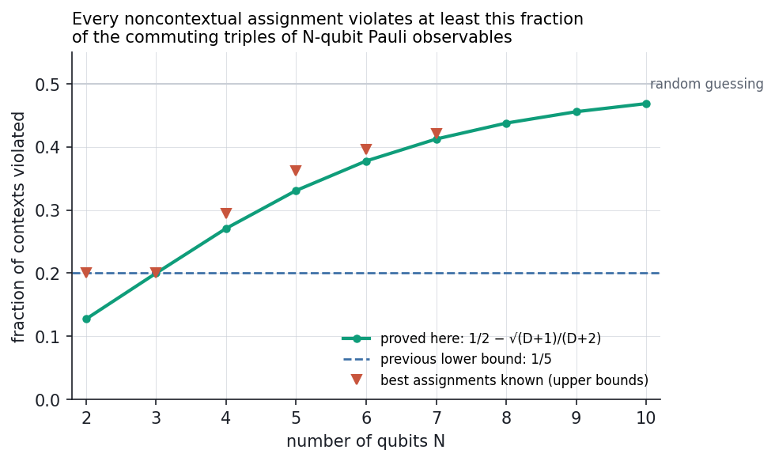
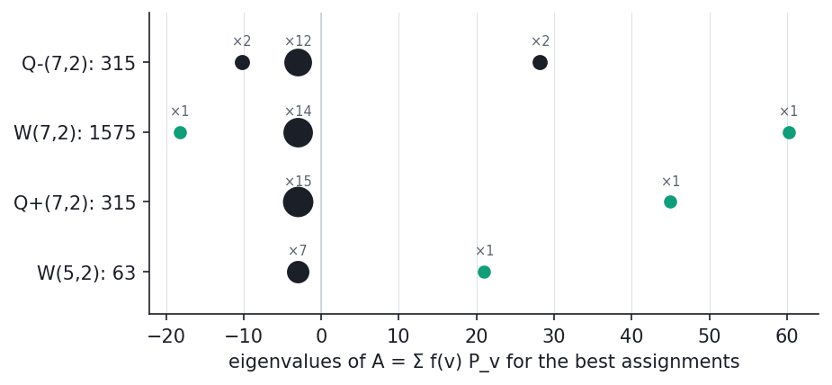
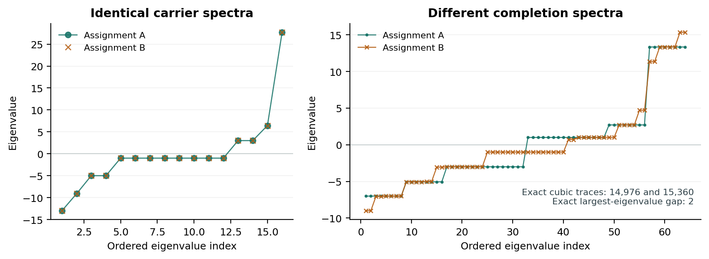
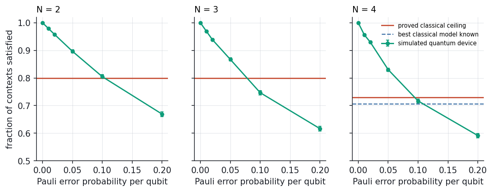

Spectral bounds and their limits in Pauli contextuality: exact configurations and a proof of Jonah's Conjecture E
A general Lean 4 bound, configurations that attain it, and cospectral sign carriers with different completion spectra in every vertex case
Alexander S. Donahue, 0thernes LLC, Washington, USA. ORCID: 0009-0006-8168-9648. Correspondence: 0_0@0thernes.art
Hoggar Bound Lab, version 1.3.0, 10 November 2026. Research preprint. Not peer reviewed.
Research and manuscript preparation used Claude (Anthropic) and OpenAI Codex agents under the author's direction; see Section 13.
Prior work and scope. The spectral floor and its saturation in the three classical families are due to Jonah [J2] and the works identified in Section 1.2. The completion question, the strict law, the classification into sixteen hyperplane cases, the block structure of the carrier, the Jordan representation of the completion, the cone lift and Conjecture E are due to Jonah [J3]. This paper combines a formalization and exact configurations attaining the floor with explicit sign carriers that prove Conjecture E in all nine vertex cases. Case C3 is proved in Lean for every number of qubits; the other eight cases are proved on paper, using two structure theorems of [J3], and checked by exact computation. None of this invalidates the spectral floor.
Abstract
Spectral methods give rigorous bounds on Pauli contextuality, but a spectrum need not retain the information required by a related completion problem. For \(N\) qubits, \(D=2^N\), and an arbitrary set \(S\) of nonidentity Pauli observables, a Lean 4 development proves Jonah's spectral floor: satisfied minus violated commuting triples is at most \((D-2)|S|^{3/2}/(6\sqrt{D-1})\). Saturating configurations outside the classical families have exact contextuality degrees 75 on 135 four-qubit observables, 480 on 496 five-qubit observables, and 729344 on 8128 seven-qubit observables; all three degrees are proved in Lean with kernel-checked counts. We relate saturation to pure states with a single nonzero Pauli modulus, two-character sets and flat phase states, and classify a specified third-level phase-state family through five qubits.
We then turn to Jonah's strict law: does the spectrum of a sign carrier on a hyperplane section determine the spectrum of the completion operator on the remaining observables? Two sign assignments on a 71-point section of the real four-qubit configuration have cospectral \(16\times16\) carriers, but their \(64\times64\) completion operators have cubic traces 14976 and 15360, and their exact binary completion minima differ. A graph construction extends this to every \(N\ge4\), with cubic traces that differ by \(\tfrac32\,8^{N-1}\); Lean proves this case, C3, for every \(N\ge4\) in the actual Pauli model. Variants over the real, complex and quaternionic numbers and a pair swap for cones give such carriers in all nine vertex cases for every \(N\ge4\), proving Jonah's Conjecture E. Outside case C3 the proof uses two structure theorems of Jonah and is checked by exact computation up to six qubits. Independent exact verifiers, falsification controls and Tsotchke software demonstrations accompany the paper. The work is AI-assisted and is neither externally peer reviewed nor a quantum-hardware experiment.
Contents
- 1. Scope and common question
- 2. Setting
- 3. The spectral floor
- 4. Saturation in the classical families
- 5. Saturation outside the classical families
- 6. Consequences for all N
- 7. The data against the floor
- 8. What a carrier spectrum does not determine
- 9. Formal verification and its boundary
- 10. A running example on the Tsotchke stack
- 11. Falsifiability and replication
- 12. Limitations and open problems
- 13. Research provenance, disclosure and availability
- References
- Appendix A. Reproduction
- Appendix B. Witness assignments
1. Scope and common question
A noncontextual assignment gives each Pauli observable a fixed value \(\pm1\). Compatible triples impose product constraints, and the contextuality degree counts the fewest constraints any assignment must violate [dB]. A signed sum of Pauli matrices converts this discrete problem into a problem about spectral moments. Its third trace records the satisfied-minus-violated count exactly. Optimizing that moment gives a lower bound on contextuality; special states turn the bound into an exact answer.
A different use of spectral information arises when the assignment is fixed only on a hyperplane section. Completing it on the remaining observables gives a quadratic optimization governed by a second operator. Does the spectrum of the fixed section determine the spectrum of this completion operator? The examples below show that it need not, in every vertex case of Jonah's classification and for every number of qubits from four on: the section spectrum can forget which eigenvalues belong to the eigenspaces of a distinguished Pauli. The completion depends on that partition. Thus a sharp global bound and a failure of spectral reconstruction coexist without contradiction.
1.1 Contributions and verification levels
The first part formalizes the spectral floor for arbitrary induced Pauli configurations and studies
its equality cases. The Lean theorem hoggar_bound is stated for the actual complex Pauli matrices,
with their multiplication phases and context signs. Finite corollaries include the known exact degrees
63 for three qubits and 315 for the real four-qubit quadric, and stronger lower bounds than \(L/5\) for
several larger classical configurations. The bound itself is prior work [J2]; the formalization and
the extension of its application to arbitrary supports are the contributions considered here.
Section 5 gives exact configurations outside the classical families. The four-qubit pivot support \(S_B\) has 135 points, 1095 contexts and degree 75; the five-qubit support \(S_5\) has 496 points, 10880 contexts and degree 480. The seven-qubit circuit support has 8128 points, 2824192 contexts and degree 729344. These three degree statements, including their finite counts and witnesses, are proved in Lean; the seven-qubit counts are double sums with \(2^{28}\) terms, evaluated by the kernel on packed sets of codes. Their interpretation as Pauli supports of particular states is checked separately by exact programs. The saturation criterion, quantum-metric interpretation, two-character-set result and classification of specified flat phase states are mathematical and executable results with the boundaries stated in Section 9.
Section 8 concerns Jonah's strict law and Conjecture E [J3]. It first supplies a fully specified
four-qubit C3 certificate: two assignments on the 71-point section of the real quadric have equal
carrier spectra, different completion spectra (Theorem 14) and different exact binary completion
minima (Corollary 16). Lean checks the actual Pauli and signed-context interpretation, not merely an
isolated pair of matrices. It then gives an explicit family of such pairs for every \(N\ge4\), built from
graphs with one edge for each nonzero difference (Theorem 17); its Lean statement
c3_strict_law_fails_general is about the same Pauli matrices, real quadric and context signs as the
floor. By a lifting lemma of [J3] this also settles case C11 (Corollary 18). Finally, variants of the
construction prove Conjecture E in all nine vertex cases (Theorem 19). That proof is on paper outside
case C3, uses Theorems A and B3 of [J3], and is checked by exact computation on the complete
configurations for three to six qubits.
The two 135-point configurations must be distinguished. The pivot support \(S_B\) is not a quadric and has 1095 contexts and degree 75. The C3 ambient configuration is the real quadric \(Q^+(7,2)\), with 1575 contexts and known degree 315 [LGG]; its section leaves 1120 outside contexts. The C3 result concerns completion spectra and does not calculate a new contextuality degree for either set.
Section 9 records the formal boundary for both parts. Sections 10 and 11 give the software demonstrations and falsification checks; Appendices A and B give reproduction commands and witness formats. In the journal layout those four sections form the supplement, retaining their numbers. The full paper and journal forms share the same mathematical statements and named references.
1.2 Relation to prior work
- The contextuality degree and its first values: de Boutray, Holweck, Giorgetti, Masson and Saniga [dB]; Muller, Saniga, Giorgetti, de Boutray and Holweck [M1] (three-qubit degree 63, the split Cayley hexagon of violated contexts); Muller, Saniga, Giorgetti, Holweck and Kelleher [M2] (upper bounds for four to seven qubits, lower bound \(L/5\)); Saniga et al. [S] (hexagons).
- The exact value \(315\) for the four-qubit hyperbolic quadric, its 240 optimal sets and a Lean proof of that value: Li, Gupta and Ganesh [LGG].
- The exact values \(d(Q^-(7,2)) = 315\), \(d(W(7,2)) = 1575\), \(d(Q^+(9,2)) = 6975\) (computer-assisted), the operator \(A = \sum_v f(v) P_v\) and its Hoggar spectrum \(\{21, -3^7\}\): Jonah [J1].
- The spectral floor itself, its Kramers (quaternionic) form for elliptic quadrics, the description of quadrics by the antiunitaries \(P_c K\), the operator identity for \(A^2\) on sets closed under products, and the theorem that among the three families the floor is attained exactly for \(W(5,2)\), \(Q^+(7,2)\), \(Q^-(5,2)\) (and trivially \(Q^-(3,2)\)): Jonah [J2], with the trace formula also in [J3]. Stronger five-qubit lower bounds (\(d(W(9,2)) \ge 28830\), \(d(Q^-(9,2)) \ge 6510\)) are announced, with proofs held privately, in [J4]. Sets that are not closed under products are named in [J2] as not covered.
- Pure states whose Pauli expectation values are zero or of one modulus: the two-qubit state of Liu, Low and Yin [LLY]; the four-qubit state \((-3,1,\dots,1)/\sqrt{24}\) and the five-qubit state \(|s_5\rangle\) with 135 and 496 non-zero values, found numerically by Cieśliński [Ci], who calls a (possibly mixed) state Pauli flat when all of its Pauli expectation values have one modulus and lists these pure states under the relaxed condition; real four-qubit states of this kind as the optima of \(Q^+(7,2)\) [J4]. Kang [K] proves that no four-qubit state, and no state of an odd number \(N \gt 1\) of qubits, has all squared Pauli expectation values in \(\{0, 2^{-N}\}\). None of [LLY, Ci, K] discusses contextuality, phase states, or more than five qubits.
- Diagonal gates of the Clifford hierarchy and their phase polynomials: Cui, Gottesman and Krishna [CGK]. \(\mathbb{Z}_4\)-valued quadratic forms and their character sums: [CCKS]. Two-character sets, two-weight codes and strongly regular graphs: Calderbank and Kantor [CK]. The bent functions of Maiorana and McFarland: [McF].
- The scalar inequality behind the floor is classical: it is Okumura's lemma [O] (equivalently the maximal sample skewness, Wilkins [W]).
- The Hoggar lines and the cubic purity condition for quantum states: Hoggar [H], Stacey [St], Jones and Linden [JL]. Bent functions and their difference sets: Rothaus [R]. Point sets with the hyperplane intersection numbers of a quadric (quasi-quadrics): De Clerck, Hamilton, O'Keefe and Penttila [DHOP].
The spectral-floor derivation in Sections 3, 4 and 6 was developed before the project identified [J1]–[J4]; the overlap is attributed here. The exhaustive computations behind the exact values of [J1] were not rerun. The assignments found in this project are consistent with those values, which remain external computer-assisted claims.
For completion spectra, [J3] gives the strict-law question, its Jordan representation, the case table and Conjecture E. Its inspected v0.5 proves the conjecture for C1 and C6 by a computer-assisted base case and a lifting lemma, reports exact pairs for several other cases at four and five qubits, finds the strict law true for all sign carriers in C5, C8, C12, C14 and C15 at three qubits, reports the three-qubit C3 phenomenon, and leaves C3 for \(N\ge4\) open after random searches at four and five qubits found no pair. Section 8 addresses \(N=4\) and then every vertex case. The literature check read that primary PDF in full, examined related deposits, and on 10 November 2026 ran 54 queries on Zenodo, arXiv, OpenAlex, DataCite, GitHub and the open web for the conjecture, case C3, the graph construction of Section 8.6 and the numbers of its tables. No other treatment of case C3 for \(N\ge4\), or of Conjecture E, was identified in that bounded search. This is a qualitative comparison of evidence, not a statistical meta-analysis or a guarantee of historical priority; unpublished work, in particular by the author of [J3], cannot be excluded. The source manuscript is dated 20 October 2026, its deposit is dated 21 October, and its latest-version endpoint returned v0.5 when inspected on 9 and 10 November.
2. Setting
Pauli operators. Let \(D = 2^N\). A point is a nonzero vector \(v = (a \mid c) \in \mathbb{F}_2^{2N}\). It labels the Hermitian operator
\[P_v \;=\; i^{\,|a \wedge c|}\, X^{a} Z^{c},\]
a tensor product of \(I, X, Y, Z\) (the exponent \(|a \wedge c|\) counts the factors equal to \(Y = iXZ\)). For numeric labels use \(a+2^Nc\), interpreting each binary vector as an integer with bit zero at the rightmost tensor factor. Words are printed in tensor-factor order from left to right. Thus four-qubit label 128 is \(ZIII\). This convention is also used for the C3 witnesses in Section 8. \(P_0 = I\), \(P_v^2 = I\), and \(\operatorname{tr} P_v = 0\) for \(v \ne 0\). Products close up to a phase,
\[P_u P_v = \tau(u,v)\, P_{u+v}, \qquad \tau(u,v) = i^{\,k_u + k_v + 3 k_{u+v}}\,(-1)^{c_u \cdot a_v}, \quad k_v = |a_v \wedge c_v| ,\]
and with the symplectic form \(\langle u, v\rangle = c_u\cdot a_v + c_v \cdot a_u\) one has \(\tau(v,u) = (-1)^{\langle u,v\rangle}\tau(u,v)\) and \(\tau(u,v)^2 = (-1)^{\langle u,v\rangle}\). So \(P_u\) and \(P_v\) commute exactly when \(\langle u,v\rangle = 0\), and then \(\tau(u,v) = s(u,v) \in \{+1,-1\}\).
Contexts. A context (a line of the symplectic polar space \(W(2N-1,2)\)) is a set \(\ell = \{u, v, u+v\}\) of three distinct points with \(\langle u, v\rangle = 0\). Its three operators commute and \(P_u P_v P_{u+v} = s_\ell\, I\) with \(s_\ell = s(u,v)\), which does not depend on the order.
Configurations and assignments. Fix a set \(S\) of points and let \(\mathcal{L}(S)\) be the set of all contexts contained in \(S\), \(L_S = |\mathcal{L}(S)|\). \(S\) is closed if, for distinct labels \(u,v\in S\) with \(\langle u,v\rangle=0\), the label \(u+v\) also belongs to \(S\): closure of commuting Pauli products up to sign, excluding the identity product of a label with itself. An assignment \(f : S \to \{+1,-1\}\) violates \(\ell\) when \(f(u) f(v) f(u+v) \neq s_\ell\). Put
\[\beta_S(f) = \sum_{\ell \in \mathcal{L}(S)} s_\ell\, f(u) f(v) f(u+v) = L_S - 2\,\mathrm{viol}(f), \qquad d(S) = \min_f \mathrm{viol}(f).\]
\(d(S)\) is the contextuality degree [dB]. For the noncontextuality inequality \(\chi = \sum_\ell s_\ell \langle P_u P_v P_{u+v}\rangle \le L_S - 2 d(S)\) quantum mechanics gives \(\chi = L_S\) in every state [C, LGG].
Three families. The full space is \(S = \mathbb{F}_2^{2N}\setminus\{0\}\), with \(D^2-1\) points and \(L = (D^2-1)(D^2-4)/12\) contexts. Let \(q_0(v)=|a\wedge c|\bmod2\) for \(v=(a\mid c)\). For \(w\in\mathbb{F}_2^{2N}\) set \(Q_w=\{v\ne0:q_0(v)+\langle w,v\rangle=0\}\). \(Q_w\) is a hyperbolic quadric \(Q^+(2N-1,2)\) if \(q_0(w)=0\) and an elliptic quadric \(Q^-(2N-1,2)\) if \(q_0(w)=1\). With \(K\) complex conjugation in the computational basis, \(\theta_w=P_wK\) is antiunitary, \(\theta_wP_v\theta_w^{-1}=(-1)^{q_0(v)+\langle w,v\rangle}P_v\) and \(\theta_w^2=(-1)^{q_0(w)}\). So the quadrics are the sets of Pauli observables fixed by a Pauli antiunitary: a real structure (\(\theta^2 = 1\)) for hyperbolic quadrics and a quaternionic structure (\(\theta^2 = -1\)) for elliptic ones [J2]. \(Q_0\) is the set of real symmetric Pauli matrices (an even number of \(Y\) factors). All three families are closed.
3. The spectral floor
Theorem 1 (spectral floor; Jonah [J2] for the three families; formalized here for arbitrary \(S\)). Let \(N \ge 1\), let \(S\) be any set of points and \(f : S \to \{\pm 1\}\). Then
\[\beta_S(f) \;\le\; \frac{(D-2)\,|S|^{3/2}}{6\sqrt{D-1}}, \qquad\text{hence}\qquad d(S) \;\ge\; \frac{L_S}{2} - \frac{(D-2)\,|S|^{3/2}}{12\sqrt{D-1}} .\]
Proof. Let \(A = \sum_{v \in S} f(v) P_v\), a Hermitian \(D \times D\) matrix.
(i) Three traces. \(\operatorname{tr} A = 0\) because \(0 \notin S\). Since \(\operatorname{tr}(P_u P_v) = D\,\delta_{uv}\) and \(f(v)^2 = 1\), \(\operatorname{tr} A^2 = D\,|S|\). Since \(\operatorname{tr}(P_u P_v P_w) = D\,\tau(u,v)\,[w = u+v]\),
\[\operatorname{tr} A^3 = D \sum_{\substack{u, v \in S \\ u+v \in S}} f(u) f(v) f(u+v)\, \tau(u,v).\]
The pairs with \(\langle u,v\rangle = 1\) cancel against their transposes, because \(\tau(v,u) = -\tau(u,v)\). The pairs with \(\langle u,v \rangle = 0\) are the ordered pairs of distinct points of a context (\(u = v\) would give \(u + v = 0 \notin S\)), six for each context, each contributing \(s_\ell f(u)f(v)f(u+v)\). Therefore \(\operatorname{tr} A^3 = 6 D\, \beta_S(f)\).
(ii) A scalar inequality (Okumura [O]). Let \(x_1, \dots, x_n\) be real with \(\sum x_i = 0\) and \(\sum x_i^2 = n m\), \(n \ge 2\), and let \(a = \sqrt{(n-1)m}\). By the Cauchy–Schwarz inequality applied to the other \(n-1\) numbers, \(x_i^2 \le (n-1)(nm - x_i^2)\), so \(x_i \le a\) for every \(i\). Hence \((x_i - a)\big((n-1)x_i + a\big)^2 \le 0\). Summing over \(i\) and using the two constraints,
\[(n-1) \sum_i x_i^3 \;\le\; n\, m\, (n-2)\, a .\]
(iii) Conclusion. Apply (ii) to the eigenvalues of \(A\) with \(n = D\), \(m = |S|\): \((D-1) \cdot 6 D \beta \le D\,|S|\,(D-2)\sqrt{(D-1)|S|}\). \(\qquad\blacksquare\)
Three remarks. First, no closure property of \(S\) is used: products that leave \(S\) do not contribute to the trace. Second, the hypothesis \(f = \pm 1\) enters only through \(\operatorname{tr} A^2 = D|S|\), so the argument bounds the cubic form \(T(x) = \sum_\ell s_\ell x_u x_v x_w\) on the sphere \(\sum x_v^2 = |S|\). Third, the bound applies to the induced configuration only, that is, with all contexts contained in \(S\).
Theorem 2 (quaternionic form; Jonah [J2]). Let \(N\ge2\). If every \(P_v\), \(v \in S\), commutes with an antiunitary \(\theta\) with \(\theta^2 = -1\) (for instance, \(S\) lies in an elliptic quadric), then
\[\beta_S(f) \;\le\; \frac{(D-4)\,|S|^{3/2}}{6\sqrt{2(D-2)}} .\]
Proof. \(A\) is a real combination of operators commuting with \(\theta\), so \(\theta A = A \theta\). If \(A x = \lambda x\) then \(A\theta x = \lambda \theta x\), and \(\langle x, \theta x\rangle = 0\) because \(\langle \theta x, \theta y\rangle = \overline{\langle x, y \rangle}\) gives \(\langle x, \theta x\rangle = \overline{\langle \theta x, \theta^2 x\rangle} = -\langle x, \theta x\rangle\). Every eigenspace is therefore an orthogonal sum of planes \(\{x, \theta x\}\) and every eigenvalue has even multiplicity (Kramers). Apply (ii) to one value from each of the \(D/2\) pairs, counted with pair multiplicity, with the same \(m\). \(\qquad\blacksquare\)
Theorem 2 is not part of the Lean development; it is checked numerically (Section 11).
Closed forms. With the standard counts, Theorems 1 and 2 give for the three families the same expression in different arguments. Writing \(\varphi(D) = \tfrac12 - \sqrt{D+1}/(D+2)\),
the fraction column below is understood only when \(L\gt 0\); configurations without contexts have degree zero, and no violated fraction is defined for them.
| family | points | contexts \(L\) | violated fraction at least |
|---|---|---|---|
| full space \(W(2N-1,2)\) | \(D^2-1\) | \((D^2-1)(D^2-4)/12\) | \(\varphi(D)\) |
| elliptic quadric \(Q^-(2N-1,2)\) | \((D+1)(D-2)/2\) | \((D+1)(D-2)(D+2)(D-4)/48\) | \(\varphi(D)\) |
| hyperbolic quadric \(Q^+(2N-1,2)\) | \((D-1)(D+2)/2\) | \((D-1)(D+2)(D-2)(D+4)/48\) | \(\varphi(D/2)\) |
The three cases are the complex, quaternionic and real members of Dyson's threefold way; the real family at \(N\) qubits has the same floor as the complex family at \(N-1\) qubits.
4. Saturation in the classical families
Theorem 3 (equality; Jonah [J2, Theorem 6] for the three families). Suppose \(S\ne\varnothing\). Equality holds in Theorem 1 if and only if there is a unit vector \(\psi\) with
\[\langle \psi | P_v | \psi \rangle = f(v)\,\sqrt{\frac{D-1}{|S|}} \quad (v \in S), \qquad \langle \psi | P_v | \psi \rangle = 0 \quad (v \notin S,\ v \ne 0).\]
Proof. Equality in (ii) forces \(x_i \in \{a, -a/(n-1)\}\) for every \(i\), and the zero sum forces exactly one value \(a\). So \(A = (a-b)\,|\psi\rangle\langle\psi| + b\,I\) with \(b = -a/(D-1)\); reading off Pauli coefficients gives the claim, and the converse is the same computation backwards. \(\qquad\blacksquare\)
We call such a \(\psi\) flat on \(S\), after [Ci]. For the full space the condition says that \(\psi\) is a fiducial vector of a SIC covariant under the \(N\)-qubit Pauli group. Such vectors exist only for \(N = 1\) and \(N = 3\) (Godsil and Roy [GR]; an elementary proof through the integrality of the floor is in [J2]): for \(N = 3\) they are the Hoggar lines.
The three saturated cases. The Hoggar fiducial \(\psi_H \propto (-1+2i, 1, 1, 1, 1, 1, 1, 1)\) has \(\langle P_v \rangle = \pm 1/3\) for all 63 three-qubit Pauli observables. We verified the following by exact counting in four independent implementations (Section 11); the values themselves are known [M1, dB, LGG, J2].
| configuration | assignment | violated | floor | spectrum of \(A\) |
|---|---|---|---|---|
| \(W(5,2)\): 63 points, 315 contexts | signs of \(\langle\psi_H\vert P_v\vert \psi_H\rangle\) | 63 | 63 | \(\{21, (-3)^7\}\) |
| \(Q^-(5,2)\): 27 points, 45 contexts | the same signs, restricted | 9 | 9 | \(\{9^2, (-3)^6\}\) |
| \(Q^+(7,2)\): 135 points, 1575 contexts | signs of the realified \(\psi_H \in \mathbb{R}^{16}\) | 315 | 315 | \(\{45, (-3)^{15}\}\) |
In the third row, \(\mathbb{C}^8\) is read as \(\mathbb{R}^{16}\); the resulting real four-qubit state has expectation \(\pm 1/3\) on all 135 real Pauli observables and \(0\) on the 120 imaginary ones (this description of the optimal assignments of \(Q^+(7,2)\) as sign patterns of real flat states is announced in [J4]; the state \((-3,1,\dots,1)/\sqrt{24}\) of [Ci] is of this kind). The violated contexts form, respectively, a classically embedded split Cayley hexagon (63 lines, three per point, incidence graph of diameter 6 and girth 12, the three lines through each point in one totally isotropic plane), nine pairwise disjoint lines, and a copy of the dual polar space \(DW(5,2)\) (315 lines, seven per point, collinearity graph distance-regular with intersection array \(\{14,12,8;1,3,7\}\)), in agreement with [M1, S, M2, LGG].
By Theorem 3, the optimal assignments of \(W(5,2)\) are exactly the sign patterns of Pauli-covariant SIC fiducials in dimension 8. Our enumeration finds 120 optimal violated sets in the orbit of the Hoggar pattern under \(Sp(6,2)\), and the context–point incidence matrix has rank 56 over \(\mathbb{F}_2\), so each set comes from \(2^7 = 128\) assignments: \(120 \cdot 128 = 15360 = 240 \cdot 64\) assignments, matching the 240 Hoggar-type SICs of 64 vectors each [St]. For \(Q^+(7,2)\) the orbit of our violated set under the reflections of \(O^+(8,2)\) has 240 elements, the number proved in [LGG].
Proposition 3 (violated contexts in the quantum metric). Let \(\psi\) be a state, \(p_v = \langle P_v\rangle\), and let \(Q_{uv} = \tfrac14\big(\langle P_u P_v\rangle - p_u p_v\big)\) be its quantum geometric tensor along the flows \(e^{-itP_v/2}\). Consider a context \(\{u, v, w\}\) with sign \(s\) and assume \(p_u p_v p_w\ne0\), so the sign assignment on this context is defined. The Fubini-Study metric is \(g_{uv} = \tfrac14 (s\,p_w - p_u p_v)\). If \(f = \operatorname{sign}(p)\), the context is violated exactly when \(4|g_{uv}| = |p_w| + |p_u p_v|\) and satisfied exactly when \(4|g_{uv}| = \big||p_w| - |p_u p_v|\big|\).
Proof. \(\langle P_uP_v\rangle = s\,p_w\); the context is violated when \(s\,p_w\) and \(p_u p_v\) have opposite signs. \(\qquad\blacksquare\)
For \(\psi_H\): \(g_{vv} = 2/9\); \(|g_{uv}| = 1/9\) on the 189 commuting pairs lying on the 63 violated contexts, \(1/18\) on the 756 pairs lying on satisfied contexts, \(1/36\) on the 1008 anticommuting pairs; the Berry curvature has modulus \(1/6\) on anticommuting pairs and vanishes on commuting ones. The hexagon is the set of pairs of largest off-diagonal metric (computed with the QGTL kernels, Section 10).
5. Saturation outside the classical families
5.1 The criterion
The statements of this section concern arbitrary sets \(S\), which need not be closed. For an assignment \(f\) and a point \(w \in S\) let the excess \(e_w(f)\) be the number of satisfied minus the number of violated contexts of \(S\) through \(w\). For a point \(w \notin S\), \(w \ne 0\), let the outside sum be \(b_w(f) = \sum s(u,v) f(u) f(v)\) over the unordered pairs of commuting points \(u, v\) of \(S\) with \(u + v = w\).
Theorem 4 (saturation criterion). Let \(S\) be a nonempty set of points, \(f : S \to \{\pm1\}\) and \(A = \sum_{v\in S} f(v) P_v\). Then
\[A^2 \;=\; |S|\, I \;+\; 2 \sum_{w \in S} e_w(f)\, f(w)\, P_w \;+\; 2 \sum_{w \notin S,\ w \neq 0} b_w(f)\, P_w ,\]
and the following are equivalent:
- (a) \(f\) attains the floor: \(\beta_S(f) = (D-2)|S|^{3/2}/(6\sqrt{D-1})\);
- (b) \(A\) has the simple eigenvalue \(\sqrt{(D-1)|S|}\) and the eigenvalue \(-\sqrt{|S|/(D-1)}\) with multiplicity \(D-1\);
- (c) some pure state is flat on \(S\) with signs \(f\) (Theorem 3);
- (d) \(e_w(f) = (D-2)\sqrt{|S|}\,/\,(2\sqrt{D-1})\) for every \(w \in S\), and \(b_w(f) = 0\) for every \(w \notin S\) with \(w\ne0\).
When they hold, \(d(S) = \tfrac12 L_S - (D-2)|S|^{3/2}/(12\sqrt{D-1})\) exactly, \(f\) is optimal, and, for \(N \ge 2\), \((D-1)|S|\) is a perfect square.
Proof. In \(A^2 = \sum_{u,v} f(u)f(v)P_uP_v\) the diagonal terms give \(|S|\,I\) and the two orders of an anticommuting pair cancel. A commuting pair \(u \ne v\) contributes \(2 s(u,v) f(u) f(v) P_{u+v}\). If \(w = u+v \in S\), the pair is a context through \(w\) and \(s(u,v)f(u)f(v) = \pm f(w)\) according to whether it is satisfied; summing over the contexts through \(w\) gives \(2 e_w(f) f(w) P_w\). If \(w \notin S\) the pairs give \(2 b_w(f) P_w\). This is the identity; for closed \(S\) the last sum is empty and it is Theorem 1 of [J2]. (a) \(\Leftrightarrow\) (b) is the equality case of the scalar inequality, and (b) \(\Leftrightarrow\) (c) is Theorem 3. Condition (b) says \((A - a)(A + a/(D-1)) = 0\) with \(a = \sqrt{(D-1)|S|}\), that is \(A^2 = |S|\,I + \tfrac{a(D-2)}{D-1} A\) (a traceless matrix with these two eigenvalues has the larger one exactly once); comparing Pauli coefficients with the identity gives (d). The floor is an integer when attained, which for \(D \gt 2\) forces \(\sqrt{(D-1)|S|}\) to be rational. \(\qquad\blacksquare\)
Condition (d) replaces the violation-regularity of [J2, Theorem 6], to which it reduces when every point lies on the same number of contexts. For \(N \le 5\) the number \(D - 1\) is squarefree, so a set that attains the floor has \(|S| = (D-1)k^2\) and excess \((D-2)k/2\): \(|S| \in \{3, 12\}\) for two qubits, \(\{7, 28, 63\}\) for three, \(\{15, 60, 135, 240\}\) for four, \(\{31, 124, 279, 496, 775\}\) for five.
Table 1. The configurations we know to attain the floor (besides the stabilizer case \(|S| = D-1\), \(d = 0\), a maximal commuting set with the signs of a stabilizer state).
| state | \(N\) | observables | contexts | degree | modulus | excess | closed | state from |
|---|---|---|---|---|---|---|---|---|
| \((i,i,i,1)/2\) | 2 | 12 | 8 | 0 | \(1/2\) | 2 | no | [LLY] |
| \(CCZ\) applied to \((1,\dots,1)/\sqrt8\) | 3 | 28 | 56 | 0 | \(1/2\) | 6 | no | folklore |
| Hoggar fiducial | 3 | 63 | 315 | 63 | \(1/3\) | 9 | yes | [H] |
| \((-3,1,\dots,1)/\sqrt{24}\) | 4 | 135 | 1575 | 315 | \(1/3\) | 21 | yes | [J4, Ci] |
| \(\psi_B\) (pivot state) | 4 | 135 | 1095 | 75 | \(1/3\) | 21 | no | this work |
| \(s_5\) | 5 | 496 | 10880 | 480 | \(1/4\) | 60 | no | [Ci] |
| \(\Phi_5\) (3 \(CS\), 2 \(CCZ\)) | 5 | 496 | 10880 | 480 | \(1/4\) | 60 | no | this work |
| \(\Phi_7\) (3 \(CS\), 8 \(CCZ\)) | 7 | 8128 | 2824192 | 729344 | \(1/8\) | 504 | no | this work |
The degrees in bold are new, as is the reading of the first two rows: the 12 two-qubit observables outside a maximal commuting set, and the 28 real three-qubit observables that are not diagonal, are noncontextual configurations on which the floor is nevertheless exact. The configurations of \(s_5\) and \(\Phi_5\) are equivalent under the Clifford group (Theorem 12). The exact-degree statements for the eight masks, with their finite counts, are proved in Lean (Section 9); their state identifications are checked separately. All eight states are reproduced on Moonlab (Section 10).
5.2 A four-qubit and a five-qubit configuration
Theorem 5 (the pivot configuration). Let
\[\psi_B \;=\; \tfrac{1}{\sqrt6}\big(\,|0011\rangle + |0111\rangle + |1011\rangle + |1100\rangle + |1101\rangle + i\,|1110\rangle\,\big),\]
with qubit 0 written on the right, and let \(S_B\) be the set of observables with non-zero expectation value in \(\psi_B\).
- The expectation values are \(\pm 1/3\) on \(S_B\), and \(|S_B| = 135\): the 15 diagonal observables \((0 \mid c)\), and for each \(a \ne 0\) the eight observables \((a \mid c)\) with \(a \cdot c = \epsilon(a)\), where \(\epsilon(a) = 1\) for the five values \(a \in E = \{0010, 0011, 0101, 1001, 1101\}\) and \(\epsilon(a) = 0\) otherwise.
- \(S_B\) contains 1095 contexts: 35 through each diagonal observable and 23 through each of the other 120. It is not closed and it is not a quadric, but every hyperplane \(w^\perp\) meets it in 71 points if \(w \in S_B\) and in 63 points otherwise, as for \(Q^+(7,2)\): it is a quasi-quadric in the sense of [DHOP]. It differs from the quadric \(a \cdot c = 0\) in 80 points, those with \(a \in E\), and \(E\) consists of five pairwise non-orthogonal vectors (an ovoid) of the doily \(W(3,2)\) defined by the form \(x_0y_1 + x_1y_0 + x_2y_3 + x_3y_2\).
- \(d(S_B) = 75\). The assignment given by the signs of the expectation values violates the 15 lines of that doily, read among the diagonal observables, and 60 further contexts, each with exactly one diagonal observable. Every non-diagonal observable of \(S_B\) lies on exactly one violated context and every diagonal one on seven.
Proof. Items 1 and 2 and the count of 75 violated contexts are finite computations in \(\mathbb{Z}[i]\)
(Section 11); item 1 also follows from Proposition 6. The bound \(d(S_B) \ge 75\) is Theorem 1 with
\(|S| = 135\), \(D = 16\), \(L = 1095\): \(\beta \le 14 \cdot 135 \cdot 45 / (6 \cdot 15) = 945\). In Lean this
is pivot_degree. \(\qquad\blacksquare\)
The noncontextuality inequality of this configuration has classical bound \(945\) and quantum value \(1095\) in every state. The quadric \(Q^+(7,2)\) has the same number of observables and the same classical bound, with quantum value \(1575\).
Proposition 6 (flat states on a bent support). Let \(T\) be the set of the six \(x \in \mathbb{F}_2^4\) with \(x_0x_1 + x_2x_3 = 1\), the support of a bent function, and let \(\phi : T \to \mathbb{C}\) with \(|\phi| = 1\). The state \(\psi_\phi = 6^{-1/2}\sum_{x \in T}\phi(x)|x\rangle\) is flat on its Pauli support if and only if, up to a global phase, all \(\phi(x)\) are fourth roots of unity. In that case the support has 135 points and the modulus is \(1/3\); it is a hyperbolic quadric (1575 contexts, degree 315) when the number of imaginary amplitudes is even, and it has 1095 contexts and degree 75 when that number is odd. The two classes are not related by any Clifford operation.
Proof. \(T\) is a difference set with parameters \((16,6,2)\) [R]: every non-trivial character sum over \(T\) is \(\pm 2\), and for every \(a \ne 0\) exactly one unordered pair \(x_a, x_a + a\) lies in \(T\). Hence \(\langle Z^c\rangle = \pm 1/3\) for \(c \ne 0\), and for \(a \ne 0\), with \(z_a = \overline{\phi(x_a + a)}\,\phi(x_a)\),
\[\langle X^a Z^c \rangle = \tfrac16 (-1)^{c \cdot x_a}\big( z_a + (-1)^{c \cdot a}\, \overline{z_a} \big),\]
so the expectation value of \(P_{(a|c)}\) is \(\pm\tfrac13 \operatorname{Re} z_a\) when \(a \cdot c = 0\) and \(\pm\tfrac13 \operatorname{Im} z_a\) when \(a \cdot c = 1\). A common modulus must be \(1/3\), which holds exactly when every \(z_a\) is \(\pm 1\) or \(\pm i\), that is, when all ratios of amplitudes are fourth roots of unity. Then for each \(a \ne 0\) exactly the eight observables with \(a \cdot c = \epsilon(a)\) are in the support, where \(\epsilon(a) = 0\) if \(z_a\) is real and \(1\) if it is imaginary. Write \(\phi = i^{k}\) and \(\kappa = k \bmod 2\); then \(\epsilon(x + x') = \kappa_x + \kappa_{x'}\). A diagonal Clifford operation multiplies \(\phi\) by \(i^{q(x)}\) for a \(\mathbb{Z}_4\)-valued quadratic form \(q\) and changes \(\kappa\) by the restriction to \(T\) of a linear functional; these sixteen restrictions have weights 0, 2 and 4, and together with the all-ones vector (a global factor \(i\)) they span the even-weight vectors of \(\mathbb{F}_2^{T}\). So \(\kappa\) of even weight is equivalent to \(\kappa = 0\), a real state, whose support is the quadric \(a \cdot c = 0\); and \(\kappa\) of odd weight is equivalent to a single imaginary amplitude, as in \(\psi_B\). Symplectic maps preserve the number of contexts, and \(1575 \ne 1095\). The two counts were computed for all 32 supports that occur, over all 4096 phase patterns (Section 11). \(\qquad\blacksquare\)
Theorem 7 (five qubits). Let \(S_5\) be the set of the 496 five-qubit observables with non-zero expectation value in the state \(s_5\) of Cieśliński [Ci, eq. (18)], all equal to \(\pm 1/4\). Then \(S_5\) contains 10880 contexts and \(d(S_5) = 480\). The optimal assignment, the signs of the expectation values, leaves 16 observables on no violated context (60 contexts through each), 240 on two (of 64) and 240 on four (of 68). Every hyperplane \(w^\perp\) meets \(S_5\) in 256 points if \(w \in S_5\) and in 240 otherwise, as for the complement of \(Q^+(9,2)\); \(S_5\) is not such a complement.
Proof. The counts are finite computations in \(\mathbb{Z}[i]\). The lower bound is Theorem 1 with
\(|S| = 496\), \(D = 32\): \(\beta \le 30 \cdot 496 \cdot 124/(6 \cdot 31) = 9920 = 10880 - 2\cdot 480\). In Lean
this is cieslinski5_degree. No state vanishes on every observable of a hyperbolic quadric: these are the
observables commuting with an antiunitary \(\theta\) with \(\theta^2 = 1\), and the condition would give
\(\rho + \theta\rho\,\theta^{-1} = 2I/D\), of rank \(D\), for a projector \(\rho\) of rank one. \(\qquad\blacksquare\)
Proposition 8 (the optimum in the quantum metric). Let \(\psi\) be flat on \(S\) with modulus \(\mu\), and let \(f\) be the signs of its expectation values. For \(u \ne v\) in \(S\) the Fubini–Study metric of Proposition 3 has \(|g_{uv}| = (\mu + \mu^2)/4\) if \(u, v, u+v\) form a context of \(S\) violated by \(f\), \(|g_{uv}| = (\mu - \mu^2)/4\) if they form a satisfied context of \(S\), and \(|g_{uv}| = \mu^2/4\) otherwise (\(u\), \(v\) anticommute, or their product is outside \(S\)). So the violated contexts of the optimal assignment are exactly the pairs with \(4|g_{uv}|\) larger than \(\mu\). The Berry curvature has modulus \(\mu/2\) on anticommuting pairs whose product is in \(S\) and vanishes on all other pairs.
Proof. Proposition 3 with \(|p| = \mu\) on \(S\) and \(p = 0\) outside; for anticommuting \(u, v\) the product \(P_uP_v\) is \(\pm i P_{u+v}\), so \(\langle P_uP_v\rangle\) is imaginary, of modulus \(|p_{u+v}|\). \(\qquad\blacksquare\)
Proposition 9 (two mutually unbiased stabilizer states). Let \(s_1, s_2\) be stabilizer state vectors whose underlying Pauli label spaces are complementary: they intersect only in the zero label. Then \(|\langle s_1|s_2\rangle| = D^{-1/2}\), and let \(\varphi = \theta + \arg\langle s_1|s_2\rangle\). The normalized state proportional to \(s_1 + e^{i\theta}s_2\) is flat on a set that is not a stabilizer group exactly in the following cases: \(N = 1\) with \(\cos\varphi = (\sqrt6 - \sqrt2)/4\) or \(-(\sqrt6 + \sqrt2)/4\) (all 3 observables, modulus \(1/\sqrt3\)); \(N = 2\) with \(\varphi = \pm\pi/2\) (12 observables, modulus \(1/2\)); \(N = 3\) with \(\varphi = \pm 3\pi/4\) (all 63, modulus \(1/3\): the Hoggar fiducial is \(\sqrt8\) times the uniform vector plus \((-2+2i)\) times the first basis vector); \(N = 4\) with \(\varphi = \pi\) (the 135 observables of a hyperbolic quadric, modulus \(1/3\): \((-3,1,\dots,1)\) is 4 times the uniform unit vector minus 4 times the first basis vector). There is none for \(N \ge 5\).
Proof. Let \(t = D^{-1/2}\) and \(n = 2 + 2t\cos\varphi\) the squared norm. An observable of the first stabilizer group has expectation \(\pm(1 + 2t\cos\varphi)/n\), and so has one of the second. Every other observable is, up to a phase, a product \(P_1P_2\) of non-identity elements of the two groups, and its expectation is \(\pm 2t\cos\varphi/n\) if \(P_1, P_2\) commute and \(\pm 2t\sin\varphi/n\) if they anticommute. Equating the non-zero moduli: all three are equal only if \(|\cos\varphi| = |\sin\varphi|\) and \(1 - \sqrt2\,t = \sqrt2\,t\), so \(D = 8\); with \(\sin\varphi = 0\) one needs \(1 - 2t = 2t\), so \(D = 16\) and \(\cos\varphi = -1\); with \(\cos\varphi = 0\) one needs \(1 = 2t\), so \(D = 4\); for \(D = 2\) there are no commuting products and \(|1 + \sqrt2\cos\varphi| = \sqrt2|\sin\varphi|\) has the two stated solutions. The remaining case \(1 + 2t\cos\varphi = 0\) gives a stabilizer state. \(\qquad\blacksquare\)
So the SIC fiducials of one and three qubits, a state with the Pauli spectrum of [LLY], and the quadric state are four members of one family, and that family stops at four qubits. The pivot state is not in it: it is a combination of three pairwise unbiased stabilizer states.
5.3 Flat phase states, and a seven-qubit configuration
Proposition 10 (the support is a two-character set). Let \(\psi\) be flat on \(S\) and let \(k^2 = |S|/(D-1)\), the inverse square of the modulus. For every point \(w\),
\[\sum_{v \in S} (-1)^{\langle v, w\rangle} \;=\; D\,[w \in S] \;-\; k^2 .\]
Equivalently, exactly \((D-2)|S|/(2(D-1)) + \tfrac{D}{2}[w \in S]\) observables of \(S\) commute with \(P_w\). Hence the graph on \(\mathbb{F}_2^{2N}\) in which \(u\) and \(v\) are adjacent when \(u + v \in S\) is strongly regular (possibly imprimitive, or complete), with degree \(|S|\) and nonprincipal character eigenvalues among \(D-k^2\) and \(-k^2\) [CK]; an empty character class contributes no eigenvalue. If \(k^2 = D/2\) the sum takes the values \(\pm D/2\): then \(S\) is a Hadamard difference set, the support of a bent function on the \(2N\)-dimensional space.
Proof. For a pure state \(\rho\) and any \(w\), \(\operatorname{tr}(\rho P_w \rho P_w) = \langle P_w\rangle^2\). Writing \(\rho = D^{-1}\sum_v p_v P_v\) with \(p_0 = 1\) and using \(P_wP_vP_w = (-1)^{\langle v,w\rangle}P_v\) gives \(p_w^2 = D^{-1}\sum_v (-1)^{\langle v,w\rangle}p_v^2\). Insert \(p_v^2 = k^{-2}\) on \(S\), \(1\) at \(v = 0\) and \(0\) elsewhere. \(\qquad\blacksquare\)
The identity for \(p_w^2\) holds for every pure state and is standard; we did not find its consequence for flat states stated. It accounts for the hyperplane numbers in Theorems 5 and 7. For the two four-qubit rows of Table 1 it gives a strongly regular graph with the parameters \((256, 135, 70, 72)\) of the affine polar graph of \(Q^+(7,2)\); for the three-, five- and seven-qubit rows with modulus \(2^{-(N-1)/2}\) it gives bent functions in 6, 10 and 14 variables.
Phase states. Let \(a_j \in \mathbb{Z}_8\), \(b_{jk} \in \mathbb{Z}_4\), \(c_{jkl} \in \mathbb{Z}_2\) and
\[p(x) = \sum_j a_j x_j + 2\sum_{j \lt k} b_{jk}\, x_j x_k + 4\sum_{j \lt k \lt l} c_{jkl}\, x_j x_k x_l \pmod 8, \qquad |\Phi_p\rangle = D^{-1/2}\sum_{x} e^{i\pi p(x)/4}\,|x\rangle .\]
\(\Phi_p\) is obtained from \(|{+}\cdots{+}\rangle\) by \(T\) gates (\(a_j\)), controlled-S gates \(CS\) (\(b_{jk}\)) and \(CCZ\) gates (\(c_{jkl}\)); these are the diagonal gates of the third level of the Clifford hierarchy [CGK]. Let \(T\) be the symmetric trilinear form on \(\mathbb{F}_2^N\) with \(T(e_j,e_j,e_j) = a_j\), \(T(e_j,e_j,e_k) = T(e_j,e_k,e_k) = b_{jk}\) and \(T(e_j,e_k,e_l) = c_{jkl}\) modulo 2. Then \(B(x,z) = T(x,x,z)\) is a symmetric bilinear form, alternating exactly when there is no \(T\) gate. A linear change of variables in \(T\) is a CNOT circuit on the state, and two polynomials with the same form differ by a diagonal Clifford gate.
Proposition 11 (phase states of the third level). For \(a \ne 0\) let \(R_a\) be the radical and \(r_a\) the rank of the symmetric bilinear form \(T(a,\cdot,\cdot)\). The expectation value of \(X^aZ^c\) in \(\Phi_p\) has modulus \(2^{-r_a/2}\) for the \(2^{r_a}\) vectors \(c\) of one coset of \(R_a^{\perp}\) and vanishes for every other \(c\); diagonal observables have expectation value zero. So \(\Phi_p\) has a single non-zero modulus exactly when \(r_a = r\) is the same for every \(a \ne 0\). Then the modulus is \(2^{-r/2}\), the support has \((D-1)2^r\) points, \(r\) is even if \(N \ge 2\), and \(\Phi_p\) attains the floor on its support. If moreover \(r = N-1\), each \(R_a\) has one non-zero element \(\rho(a)\), the map \(\rho\) is an involution of the non-zero vectors, and
\[S = \{\,(a \mid c) \;:\; a \ne 0,\ \ c\cdot\rho(a) = \epsilon(a)\,\}\]
for a function \(\epsilon\): the support of a bent function of Maiorana–McFarland type [McF].
Proof. Modulo 8 the third difference of \(p\) is \(4T\), independent of the base point, and the second difference is even. So \(p(x) - p(x+a) = h_a + 2q_a(x)\) with \(q_a(0) = 0\) and \(q_a(x+y) = q_a(x) + q_a(y) + 2T(a,x,y)\) modulo 4, a \(\mathbb{Z}_4\)-valued quadratic form [CCKS], and \(\langle X^aZ^c\rangle = D^{-1}e^{i\pi h_a/4}\sum_x i^{q_a(x)}(-1)^{c\cdot x}\). Now
\[\Big|\sum_x i^{q_a(x)}(-1)^{c\cdot x}\Big|^2 = \sum_z i^{q_a(z)}(-1)^{c\cdot z}\sum_y (-1)^{T(a,y,z)} = D \sum_{z \in R_a} i^{q_a(z)}(-1)^{c\cdot z} .\]
On \(R_a\) the map \(z \mapsto i^{q_a(z)}\) is a character with values \(\pm1\), so the last sum is \(2^{N-r_a}\) when \((-1)^{c\cdot z}\) agrees with it on \(R_a\) and \(0\) otherwise. That \(r\) is even follows from Theorem 4. If \(r = N-1\) then \(T(a,\rho(a),\cdot) = 0\), which is symmetric in \(a\) and \(\rho(a)\), so \(\rho(\rho(a)) = a\). \(\qquad\blacksquare\)
Theorem 12 (all flat phase states of the third level on at most five qubits). Among the non-zero forms \(T\) in \(N \le 5\) variables, those of constant rank are the following.
| \(N\) | forms | of constant rank | classes under CNOT circuits | gates of a representative | \(r\) | observables |
|---|---|---|---|---|---|---|
| 1 | 1 | 1 | 1 | \(T\) | 1 | 2 |
| 2 | 7 | 1 | 1 | \(CS(0,1)\) | 2 | 12 |
| 3 | 127 | 8 | 2 | \(CCZ(0,1,2)\); \(CS(0,1)\) \(CS(0,2)\) | 2 | 28 |
| 4 | 16383 | 0 | ||||
| 5 | 33554431 | 166656 | 1 | \(CS(0,1)\) \(CS(1,3)\) \(CS(2,4)\) \(CCZ(0,1,4)\) \(CCZ(0,2,3)\) | 4 | 496 |
For five qubits the stabilizer of the form in \(GL(5,2)\) has order 60. Write \(\Phi_5\) for the state of the last row. The supports of the two three-qubit classes are equivalent under \(Sp(6,2)\), and the support of \(\Phi_5\) is mapped onto the set \(S_5\) of Theorem 7 by a symplectic map of \(\mathbb{F}_2^{10}\). Thus no state with nonzero associated form \(T\) in this family is flat on four qubits; on five qubits every flat state with nonzero \(T\) is obtained from \(\Phi_5\) by a CNOT circuit and a diagonal Clifford gate; and the configuration found numerically in [Ci] is, up to a Clifford operation, the Pauli support of a circuit of five gates. The excluded zero form gives diagonal-Clifford stabilizer states, which are flat in every number of qubits.
Proof. Exhaustive enumeration, with the orbits computed from the transvections that generate
\(GL(N,2)\) (src/third_level.c; for \(N \le 4\) also scripts/phase_states.py). The two symplectic maps
are found by search and verified on every point; the second is recorded in results/phase_states.json.
\(\qquad\blacksquare\)
For \(N = 2\) the state is that of [LLY] up to a phase and complex conjugation. In coordinates \(X = (x_1, x_2, \alpha) \in \mathbb{F}_q \times \mathbb{F}_q \times \mathbb{F}_2\) with \(q = 4\), the five-qubit form is
\[T(X,Y,Z) = \operatorname{Tr}\big[x_1y_1z_2^2 + x_1y_2^2z_1 + x_2^2y_1z_1 + x_2y_2z_1^2 + x_2y_1^2z_2 + x_1^2y_2z_2\big] + \alpha\,\sigma(y,z) + \beta\,\sigma(x,z) + \gamma\,\sigma(x,y),\]
where \(\sigma(y,z) = \operatorname{Tr}[a\,(y_1z_2 + y_2z_1)]\), \(\operatorname{Tr}\) is the trace to \(\mathbb{F}_2\) and \(a\) generates \(\mathbb{F}_4\). It is invariant under \((x_1, x_2) \mapsto (\lambda x_1, \lambda^{-1}x_2)\).
Theorem 13 (seven qubits). Let
\[|\Phi_7\rangle = CS_{01}\,CS_{23}\,CS_{45}\;\, CCZ_{012}\,CCZ_{035}\,CCZ_{124}\;\, CCZ_{046}\,CCZ_{056}\,CCZ_{136}\,CCZ_{236}\,CCZ_{256}\; |{+}\rangle^{\otimes 7}\]
and let \(S_7\) be its Pauli support.
- \(\Phi_7\) has expectation values \(\pm 1/8\) on \(S_7\) and \(0\) elsewhere, and \(|S_7| = 8128 = 2^6(2^7-1)\).
- \(S_7\) contains 2 824 192 contexts and \(d(S_7) = 729\,344\). In the optimal assignment every observable of \(S_7\) lies on 504 more satisfied than violated contexts; the number of contexts through an observable is 1008, 1024, 1040, 1056, 1072 or 1104 (for 64, 3584, 1792, 1344, 896 and 448 observables).
- Let \(\mathcal{F}\) be the family of forms on \(\mathbb{F}_2^7\) for which \(B\) is alternating of rank 6. The forms of constant rank in \(\mathcal{F}\) are a single class under CNOT circuits, and the stabilizer of such a form in \(GL(7,2)\) has order 7. In coordinates \(\mathbb{F}_8 \times \mathbb{F}_8 \times \mathbb{F}_2\) the form is the one displayed above, with the trace of \(\mathbb{F}_8\), with \(a^3 + a^2 + 1 = 0\), and with the additional term \(\operatorname{Det}(x_1,y_1,z_1)\), the alternating trilinear form of \(\mathbb{F}_8\) over \(\mathbb{F}_2\).
- For each of the ten other types of \(B\) (alternating of rank 0, 2 or 4; not alternating, of rank 1 to 7) we tested \(3 \times 10^8\) random forms; none has constant rank.
Proof. Item 1 and the counts of item 2 are finite computations in \(\mathbb{Z}[i]\), made by three
programs that share no code (Section 11). The lower bound is Theorem 1 with \(|S| = 8128\), \(D = 128\):
\(\beta \le 126 \cdot 8128 \cdot 1016/(6\cdot 127) = 1\,365\,504 = 2\,824\,192 - 2 \cdot 729\,344\). In Lean, for
the set of observables given by the mask of \(S_7\), these are phase7_contexts and phase7_degree
(Section 9.1). For item 3,
choose a basis in which \(e_6\) spans the radical of \(B\) and \(e_0,\dots,e_5\) is a symplectic basis of a
complement. Every form of \(\mathcal{F}\) is then the third difference of
\(2(x_0x_1 + x_2x_3 + x_4x_5) + 4w(x_0,\dots,x_5) + 4x_6\,s(x_0,\dots,x_5)\) for a set \(w\) of \(CCZ\) gates
on the first six qubits (\(2^{20}\) choices) and a graph \(s\) on them, which must be nondegenerate (13888
choices). All \(1.46 \times 10^{10}\) such forms were tested (src/family7.c): 13 271 040 have constant
rank. The group that preserves the normal form has order \(64\,|Sp(6,2)| = 92\,897\,280\), and the
solutions are one orbit of it, of size \(92\,897\,280/7\) (src/orbits7.c). \(\qquad\blacksquare\)
The noncontextuality inequality of \(S_7\) has classical bound \(1\,365\,504\) and quantum value \(2\,824\,192\): no noncontextual model reproduces more than \(74.2\) per cent of its contexts. Item 4 is evidence, not proof, that \(\Phi_7\) represents the only class of flat phase states with nonzero associated form on seven qubits, up to CNOT circuits and diagonal Clifford gates. The numbers of observables for three, five and seven qubits, 28, 496 and 8128, are \(2^{N-1}(2^N-1)\); that they are the second, third and fourth perfect numbers reflects only that 7, 31 and 127 are prime. We do not know whether this family extends to a nine-qubit flat phase state of constant rank eight, which would have 130816 observables of modulus \(1/16\). Proposition 11 does not rule out other constant even ranks. The tested forms with the symmetry \((x_1,x_2) \mapsto (\lambda x_1,\lambda^{-1}x_2)\) of the five- and seven-qubit ones do not have constant rank for nine or eleven qubits.
5.4 What does not attain the floor
For the \(D^2 - D\) observables outside a maximal commuting set (the non-diagonal ones, say) there are \((D-1)(D-2)D^2/12\) contexts and Theorem 1 gives a violated fraction of at least \(\tfrac12 - 2^{-N/2}\). By Theorem 4, equality would need a state with all non-diagonal expectation values of modulus \(2^{-N/2}\), that is, a state whose orbit under the Pauli group forms, with the computational basis, a complete set of mutually unbiased bases. For two qubits this is the first row of Table 1. For four qubits and for every odd \(N \ge 3\) no such state exists [K], so the degree is strictly above the floor there. A numerical search from random starts found flat four-qubit states only with \(|S| = 135\) (both classes of Proposition 6) and flat five-qubit states only with \(|S| = 496\); it found none with \(|S| = 60\), or with \(|S|\) equal to 124, 279 or 775. This is evidence, not proof, that Table 1 is complete up to five qubits.
6. Consequences for all \(N\)
Corollary A (full space). For every \(N \ge 1\) every assignment of the \(D^2 - 1\) Pauli observables
violates at least \(\varphi(D)\,L\) contexts (Lean: full_space_fraction). Since a uniformly random
assignment violates \(L/2\) contexts on average, \(d/L \to 1/2\).
The count inequality also covers \(N=1\), when there are no contexts. The ratios and noise thresholds below are stated for \(N\ge2\), so \(L\gt 0\).
Exponential violation. The ratio of the quantum value to the noncontextual bound of the full inequality satisfies \(L/(L-2d) \ge (D+2)/(2\sqrt{D+1}) \sim 2^{N/2-1}\). Cabello [C] proposed this inequality in 2010 and argued for exponential growth; his Lemma 3 identifies the bound with the number of positive contexts, which is correct for two qubits but not for three, where 252 of the 315 predictions can be satisfied rather than 225 [M1]. Corollary A proves the growth.
Noise. If imperfections scale every correlator by a visibility \(\eta\), the inequality is violated when \(\eta \gt 1 - 2d/L\), hence whenever \(\eta \gt 2\sqrt{D+1}/(D+2)\): above \(0.6\) for three qubits, \(0.458\) for four, \(0.338\) for five, \(0.062\) for ten. In the notation of [C, MS] the tolerated error per context \(\varepsilon = 2d/L\) is at least \(1 - 2\sqrt{D+1}/(D+2)\), which exceeds \(0.707\) (the largest value confirmed in the search of [MS], for configurations of a different kind) from six qubits on and tends to \(1\).
Proposition 4 (the floor is sharp up to a logarithmic factor). Let \(N\ge2\). For every pure \(N\)-qubit state with \(M = \max_{v \ne 0} |\langle P_v \rangle|\) there is an assignment of the full space with
\[\beta \;\ge\; \frac{(D-1)(D-2)}{6\,M^3}, \qquad\text{so}\qquad \frac{1}{(D+1)(D+2)\,M_N^3} \;\le\; \frac12 - \frac{d}{L} \;\le\; \frac{\sqrt{D+1}}{D+2},\]
where \(M_N\) is the least value of \(M\) over all states. \(M_N \ge 1/\sqrt{D+1}\), with equality exactly when a Pauli-covariant SIC exists, and \(M_N \le C\sqrt{\log D / D}\) for an absolute constant \(C\).
Proof. A pure state has \(\operatorname{tr}\rho^3 = 1\); with \(\rho = D^{-1}(I + \sum_v p_v P_v)\) and \(\sum_{v\ne 0} p_v^2 = D-1\), the trace computation of Theorem 1 gives \(T(p) = \sum_\ell s_\ell\, p_u p_v p_w = (D-1)(D-2)/6\) (the cubic purity condition [JL, St]). Choose the signs \(f(v)\) independently with mean \(p_v/M\). Then \(\mathbb{E}\,\beta(f) = T(p)/M^3\), and some \(f\) does at least as well. The upper bound on \(M_N\) follows from Lévy's lemma for Haar-random states and a union bound over the \(D^2-1\) observables [HLW]. \(\qquad\blacksquare\)
So \(\tfrac12 - d/L = \Theta(2^{-N/2})\) up to a factor \(\log^{3/2} D\). In four sample runs the sign patterns of Haar-random states reached between 50 and 64 per cent of the floor value of \(\beta\) for four and five qubits. We did not find Proposition 4 in the notes we could read; we do not claim it is new.
Averaging between families. Every context of \(W(7,2)\) lies on exactly 24 of its 120 elliptic quadrics, and every context of \(Q^+(9,2)\) lies in exactly 112 of its 496 sections by an imaginary Pauli observable, each a signed copy of \(W(7,2)\) [LGG, J1]; we re-verified these incidences by enumeration. With Theorem 2 and integer rounding this gives \(d(Q^-(7,2)) \ge 291\), \(d(W(7,2)) \ge 1455\), \(d(Q^+(9,2)) \ge 6444\), \(d(W(9,2)) \ge 28791\), each below the values of [J1, J4] and stated here only to show what the floor alone yields.
7. The data against the floor
Table 2 confronts every published or pre-printed value we know for the classical families with the floor. "Floor" is the integer bound of Theorem 1 (Theorem 2 for elliptic quadrics), computed in exact integer arithmetic. "Best assignment" is the smallest number of violated contexts known; all entries up to five qubits were reproduced by our own search (Section 11).
Table 2. Classical configurations compared with the spectral floor.
| configuration | \(N\) | points | contexts | averaging bound \(\lceil L/5\rceil\) [M2, LGG] | floor | best assignment | exact value |
|---|---|---|---|---|---|---|---|
| \(W(3,2)\) | 2 | 15 | 15 | 3 | 2 | 3 | 3 [dB] |
| \(Q^+(3,2)\) | 2 | 9 | 6 | – | 1 | 1 | 1 |
| \(W(5,2)\) | 3 | 63 | 315 | 63 | 63 | 63 | 63 [M1] |
| \(Q^+(5,2)\) | 3 | 35 | 105 | 21 | 14 | 21 | 21 [dB] |
| \(Q^-(5,2)\) | 3 | 27 | 45 | 9 | 9 | 9 | 9 [dB] |
| \(W(7,2)\) | 4 | 255 | 5355 | 1071 | 1451 | 1575 [M2] | 1575 [J1]* |
| \(Q^+(7,2)\) | 4 | 135 | 1575 | 315 | 315 | 315 [M2] | 315 [LGG] |
| \(Q^-(7,2)\) | 4 | 119 | 1071 | 215 | 291 | 315 [M2] | 315 [J1]* |
| \(W(9,2)\) | 5 | 1023 | 86955 | 17391 | 28786 | 31479 [M2] | open (\(\ge 28830\) [J4]*) |
| \(Q^+(9,2)\) | 5 | 527 | 23715 | 4743 | 6426 | 6975 [M2] | 6975 [J1]* |
| \(Q^-(9,2)\) | 5 | 495 | 19635 | 3927 | 6501 | 7087 [M2] | open (\(\ge 6510\) [J4]*) |
| \(W(11,2)\) | 6 | 4095 | 1396395 | 279279 | 527621 | 553140 [M2] | open |
| \(Q^+(11,2)\) | 6 | 2079 | 365211 | 73043 | 120901 | 132391 [M2] | open |
| \(Q^-(11,2)\) | 6 | 2015 | 332475 | 66495 | 125624 | 131700 [M2] | open |
| \(W(13,2)\) | 7 | 16383 | 22362795 | 4472559 | 9227609 | 9406024 [M2] | open |
| \(Q^+(13,2)\) | 7 | 8255 | 5720715 | 1144143 | 2161542 | 2331191 [M2] | open |
| \(Q^-(13,2)\) | 7 | 8127 | 5458635 | 1091727 | 2252409 | 2294580 [M2] | open |
* computer-assisted, not formally verified, not peer reviewed; we did not re-run these computations.
Reading of the table. (1) All 17 rows are consistent with the floor; it is attained in the three rows in bold and, after rounding, in \(Q^+(3,2)\), the Mermin–Peres square. (2) From four qubits on (five for hyperbolic quadrics) the floor exceeds the averaging bound \(L/5\), and the gap to the best assignment shrinks: the floor closes 75, 81, 91 and 96 per cent of the interval between \(L/5\) and the best assignment for the full space at \(N = 4, 5, 6, 7\). (3) For seven qubits the best known assignments of the full space and of the elliptic quadric are within two per cent of the floor. (4) Outside these families the floor is exact for the configurations of Table 1.
An empirical regularity, also recorded for four qubits in [J1]: in every best assignment we computed, \(A + 3I\) has low rank. The spectra of \(A\) are \(\{21 \pm 16\sqrt6, (-3)^{14}\}\) for \(W(7,2)\), \(\{(9 \pm 4\sqrt{23})^2, (-3)^{12}\}\) for \(Q^-(7,2)\), \(\{45 \pm 56\sqrt2, (-3)^{30}\}\) for \(Q^+(9,2)\), and three (respectively three pairs of) eigenvalues different from \(-3\) for \(W(9,2)\) (respectively \(Q^-(9,2)\)).

Figure 1. Lower bound on the fraction of violated contexts for the full N-qubit Pauli configuration, the earlier bound 1/5, and the best assignments known.

Figure 2. Spectra of \(A = \sum f(v)P_v\) for the best assignments at three and four qubits.
8. What a carrier spectrum does not determine
8.1 The completion question
For a fixed assignment on a hyperplane section, the remaining contextuality constraints define a quadratic problem. Jonah's strict law says that equal spectra of the section carriers imply equal spectra of the corresponding completion operators within a specified class [J3]. Sign carriers, whose coefficients all belong to \(\{-1,+1\}\), impose a stronger admissibility requirement than general real carriers: a construction using zero coefficients need not answer the sign-carrier question.
[J3, Theorem B4] lists sixteen hyperplane cases. Nine of them have a section with a vertex: C1, C3, C5, C6, C8, C11, C12, C14 and C15. For real carriers the strict law fails in all nine [J3, Theorem B2]; for sign carriers [J3] proves failure in C1 and C6 and states:
Conjecture E [J3, Section 6]. On sign carriers the strict law fails in every vertex case for every \(N\ge4\).
Case C3 is a hyperbolic quadric cut by a hyperplane whose polar point lies on the quadric; the inspected source leaves it open for \(N\ge4\). We first give two admissible carriers at \(N=4\) and prove the predicted failure there (Sections 8.2 to 8.5). Section 8.6 gives a family for every \(N\ge4\), and Section 8.7 constructions for all nine vertex cases, which prove the conjecture. This concerns the information in the entire carrier spectrum, even when its eigenvalues are known exactly; it leaves the spectral floor of Section 3 valid. Case names C1 to C15 are those of [J3]; the equation tags (C1) to (C12) refer to the four-qubit certificate, and (E1) to (E12) to Sections 8.6 and 8.7.
8.2 Geometry and two complete witnesses
Set \(N=4\), \(D=16\), and let \(\mathcal Q=Q^+(7,2)\) be the 135 nonidentity real Pauli observables, equivalently the labels with \(q_0(a,c)=a\cdot c=0\) modulo two. Use the polar point \(p_\star=ZIII\) and write
\[H=\{v\in\mathcal Q:\langle v,p_\star\rangle=0\},\qquad O=\mathcal Q\setminus H.\]
Here \(H\) is the section and \(O\) its complement; the letter \(S\) retains its general meaning from Section 2. If \(R\) is the set of 35 real nonidentity three-qubit Paulis, then
\[H=\{Z\otimes I_8\}\cup\{I\otimes P,Z\otimes P:P\in R\}.\]
Thus \(|H|=71\) and \(|O|=64\). The outside points have first factor \(X\) with a real three-qubit factor, or first factor \(Y\) with an imaginary three-qubit factor: 36 and 28 points respectively. Each line not contained in \(H\) contains exactly one section point and two outside points. The quadric has 1575 contexts, of which 1120 are outside lines; these numbers refer to \(\mathcal Q\), not \(S_B\).
Define \(\sigma_0,\sigma_1:H\to\{-1,+1\}\) to be positive except at these labels:
Table 3. Complete C3 sign witnesses.
| Carrier | Negative Pauli words | Negative numeric labels |
|---|---|---|
| \(\sigma_0\) | IIZZ, IYYI, ZIZZ, ZYYI | 48, 102, 176, 230 |
| \(\sigma_1\) | IYXY, ZIIZ, ZIZZ, ZYXY | 87, 144, 176, 215 |
Both give \(+1\) to \(p_\star\). No search seed or external assignment file is needed to specify them. Their carrier operators are \(A_\sigma=\sum_{s\in H}\sigma(s)P_s\). Define the real symmetric completion matrix \(\Lambda_\sigma\), indexed by \(O\), by
\[(\Lambda_\sigma)_{uv}=(\Lambda_\sigma)_{vu}=s_\ell\sigma(s) \quad\text{when }\ell=\{s,u,v\},\ s\in H,\ u,v\in O,\]
and zero for all other entries, including the diagonal. For \(y\in\{-1,+1\}^O\) the number of violated outside lines is
\[F(\sigma,y)=560-\frac14y^{\mathsf T}\Lambda_\sigma y. \tag{C1}\]
Each line contributes \((1-s_\ell\sigma(s)y_uy_v)/2\); the symmetric quadratic form counts it twice. This proves the normalization and agrees with [J3, Section 2].
8.3 Exact statement
Theorem 14 (four-qubit C3 certificate). The witnesses in Table 3 have equal characteristic polynomials,
\[\begin{aligned} \chi_{A_{\sigma_0}}(t)=\chi_{A_{\sigma_1}}(t) ={}&(t-3)^2(t+1)^8(t+5)^2(t+13)\\ &{}\cdot(t^3-25t^2-133t+1621), \end{aligned} \tag{C2}\]
but their completion operators satisfy
\[\operatorname{tr}\Lambda_{\sigma_0}^3=14976,\qquad \operatorname{tr}\Lambda_{\sigma_1}^3=15360. \tag{C3}\]
Consequently the carrier spectra, including multiplicities, are equal and the completion spectra are different. This proves failure of the strict law for four-qubit C3 sign carriers, establishing the corresponding instance of Conjecture E.
8.4 Block proof and the information that is lost
Every section operator commutes with \(p_\star\), so in its \(\pm1\) eigenspaces
\[A_\sigma=\operatorname{diag}(B_{\sigma,+},B_{\sigma,-}).\]
Put \(\alpha=\sigma(Z\otimes I)\), \(a_P=\sigma(I\otimes P)\) and \(b_P=\sigma(Z\otimes P)\). The two real symmetric \(8\times8\) blocks are
\[B_{\sigma,+}=\alpha I+\sum_{P\in R}(a_P+b_P)P,\qquad B_{\sigma,-}=-\alpha I+\sum_{P\in R}(a_P-b_P)P. \tag{C4}\]
Since \(a_P,b_P\in\{-1,+1\}\), each \(P\) occurs in exactly one block with coefficient \(+2\) or \(-2\). For three-qubit codes use \(a+8c\) and let \(T_R=\sum_{P\in R}P\). Table 3 gives
\[\begin{array}{ll} B_{0,+}=I+2(T_R-2P_{24}-2P_{54}),& B_{0,-}=-I,\\ B_{1,+}=I+2(T_R-P_8-P_{24}-2P_{47}),& B_{1,-}=-I+2P_8+2P_{24}. \end{array} \tag{C5}\]
Here \(P_8=IIZ\), \(P_{24}=IZZ\), \(P_{47}=YXY\) and \(P_{54}=YYI\). Define
\[g(t)=t^3-25t^2-133t+1621,\qquad h(t)=(t+13)g(t).\]
Exact determinant evaluation in (C5) yields the following finite integer identities.
Table 4. The block characteristic polynomials.
| Block | Characteristic polynomial |
|---|---|
| \(B_{0,+}\) | \((t-3)^2(t+5)^2h(t)\) |
| \(B_{0,-}\) | \((t+1)^8\) |
| \(B_{1,+}\) | \((t+1)^4h(t)\) |
| \(B_{1,-}\) | \((t-3)^2(t+1)^4(t+5)^2\) |
They can be reproduced directly from the explicitly specified eight-dimensional matrices; no approximate root comparison or classification theorem is involved. The last row also follows from the joint eigenvalues of its two commuting Z-type Paulis. Multiplying the plus and minus polynomials in each pair proves (C2).
The unlabelled union of block spectra stays fixed while their allocation changes. Two copies each of \(3\) and \(-5\) move from the plus block to the minus block, and four copies of \(-1\) move in the reverse direction. The common carrier spectrum alone does not record this allocation.
The outside Pauli span is the space of real symmetric off-diagonal block matrices
\[\begin{pmatrix}0&M\\M^{\mathsf T}&0\end{pmatrix},\qquad M\in\mathbb R^{8\times8}.\]
One half of the anticommutator with \(A_\sigma\) acts there as
\[M\longmapsto\frac12(B_{\sigma,+}M+MB_{\sigma,-}). \tag{C6}\]
Its matrix in the outside Pauli basis is exactly \(\Lambda_\sigma\): commuting Pauli pairs supply the context sign and anticommuting pairs vanish. The polar term contributes zero on this outside span. This is the C3 Jordan representation of [J3, Theorem A and Table 1]. In orthonormal block eigenbases,
\[\operatorname{spec}\Lambda_\sigma= \left\{\frac{b_{+,i}+b_{-,j}}2:1\le i,j\le8\right\}, \tag{C7}\]
where each ordered pair contributes once. These sums depend on the block allocation that the carrier spectrum has discarded. Expanding their cubes gives
\[\begin{aligned} \operatorname{tr}\Lambda_\sigma^3={}&\operatorname{tr}A_\sigma^3\\ &+\frac38\bigl[ (\operatorname{tr}B_{\sigma,+}^2)(\operatorname{tr}B_{\sigma,-}) +(\operatorname{tr}B_{\sigma,+})(\operatorname{tr}B_{\sigma,-}^2) \bigr]. \end{aligned} \tag{C8}\]
For both witnesses \(\operatorname{tr}B_+=8\), \(\operatorname{tr}B_-=-8\) and \(\operatorname{tr}A^3=18336\). If \(r\) real nonidentity three-qubit Paulis occur in the plus block, Pauli orthogonality gives
\[\operatorname{tr}B_+^2=8(1+4r),\qquad \operatorname{tr}B_-^2=8(1+4(35-r)). \tag{C9}\]
For \(\sigma_0\), \(r=35\), so these traces are 1128 and 8; for \(\sigma_1\), \(r=33\), so they are 1064 and 72. Equation (C8) therefore gives
\[18336+3(8-1128)=14976,\qquad 18336+3(72-1064)=15360.\]
Equal spectra would have equal cubic traces. Their difference of 384 proves (C3) and the spectral conclusion without numerical diagonalization. \(\qquad\blacksquare\)
8.5 Consequences for the completion optima
Corollary 15. The largest completion eigenvalues differ by exactly two:
\[\lambda_{\max}(\Lambda_{\sigma_1})- \lambda_{\max}(\Lambda_{\sigma_0})=2. \tag{C10}\]
Let \(\rho\) be the largest root of \(g\). The values \(g(25)=-1704\), \(g(30)=2131\) and \(g'(t)=3t^2-50t-133\gt 0\) for \(t\ge25\) show that exactly one root lies above 25, and it belongs to \((25,30)\). All roots are real because they occur in a real symmetric block polynomial. Both plus blocks have largest eigenvalue \(\rho\); their other explicit eigenvalues are at most 3. The minus-block maxima are \(-1\) and \(3\) respectively. Equation (C7) gives \((\rho-1)/2\) and \((\rho+3)/2\), proving (C10).
On the continuous sphere \(y^{\mathsf T}y=64\), equation (C1) has minimum
\[\min_{\|y\|^2=64}F(\sigma,y)=560-16\lambda_{\max}(\Lambda_\sigma). \tag{C11}\]
This relaxed minimum is 32 lower for \(\sigma_1\) than for \(\sigma_0\). The binary minimum is bounded below by the spherical one; a binary vector need not be a top eigenvector. Corollary 15 alone therefore does not prove a difference of 32, or any difference, between exact binary completion minima. A finer enclosure of \(\rho\) and one explicit completion do.
Corollary 16 (the binary completion minima differ). Every completion of \(\sigma_0\) violates at least 347 of the 1120 outside lines, every completion of \(\sigma_1\) violates at least 315 of them, and some completion of \(\sigma_1\) violates exactly 344. Hence
\[\min_y F(\sigma_1,y)\;\le\;344\;<\;347\;\le\;\min_y F(\sigma_0,y). \tag{C12}\]
Proof. By (C11) and Corollary 15 the two lower bounds are \(560-8(\rho-1)=568-8\rho\) and \(560-8(\rho+3)=536-8\rho\). The polynomial \(g\) is increasing from 25 on, and
\[g\!\left(\tfrac{221}{8}\right)=-\tfrac{25539}{512}\;<\;0\;<\;\tfrac{3067}{64}=g\!\left(\tfrac{111}{4}\right),\]
so \(221/8\lt\rho\lt111/4\), hence \(346\lt568-8\rho\lt347\) and \(314\lt536-8\rho\lt315\). The number of violated lines is an integer, which gives the two lower bounds. For the upper bound let \(y\) be \(-1\) at the 30 outside labels listed in Appendix B and \(+1\) at the other 34; counting the 1120 outside lines one by one gives 344 violated lines, equivalently \(y^{\mathsf T}\Lambda_{\sigma_1}y=864\). \(\qquad\blacksquare\)
Simulated annealing with 6000 restarts found a completion of \(\sigma_0\) violating 368 outside lines
(also listed in Appendix B). The two exact minima therefore lie in \([347,368]\) and \([315,344]\); the
upper ends are search results, not proved optima. scripts/cospectral_pair.py (30 checks) rebuilds
the configuration, both carriers, both degree-64 completion polynomials, the enclosure of \(\rho\) and
both witnesses in exact arithmetic, without code shared with the C3 programs of Section 11.2.

Figure 3. C3 carrier and completion spectra. Assignment A is \(\sigma_0\) and B is \(\sigma_1\). Numerical eigenvalue locations illustrate the certificate; exact integer identities establish carrier cospectrality, unequal completion cubic traces and the largest-eigenvalue gap. Multiplicities are retained.
The fixed-section score is also identical. The section has \(1575-1120=455\) contexts. The trace
identity of Section 3 gives \(\beta_H=18336/(6\cdot16)=191\) for each carrier, hence
\((455-191)/2=132\) violated section contexts and 323 satisfied ones. Independent integer
Pauli-label phase arithmetic in scripts/unified_section_score.py recounts these values; the record
is results/unified-section-score.json. Flipping label 1 of the first assignment changes its count
to 147 and its score to 161, furnishing a negative control. This section-score observation is a
derived and executable check, not an additional specialized Lean theorem.
8.6 Case C3 for every number of qubits
Let \(N\ge3\), \(m=N-1\) and \(k=2^m\). Let \(\mathcal Q=Q^+(2N-1,2)\) be the set of real nonidentity \(N\)-qubit Pauli observables, \(p_\star=Z\otimes I_k\), \(H\) the section (the points of \(\mathcal Q\) that commute with \(p_\star\)) and \(O=\mathcal Q\setminus H\). With \(R\) the set of real nonidentity \(m\)-qubit Pauli observables, \(|R|=(k-1)(k+2)/2\),
\[H=\{p_\star\}\cup\{I\otimes P,\;Z\otimes P:P\in R\},\qquad |H|=1+(k-1)(k+2),\qquad |O|=k^2. \tag{E1}\]
Carrier operators and completion matrices are defined as in Section 8.2. On \(m\) qubits write vectors of \(\mathbb F_2^m\) as integers, \(a\cdot c\) for the number of common bits, \(P_{a,c}=i^{\,a\cdot c}X^aZ^c\), which is real exactly when \(a\cdot c\) is even, and \(X^aZ^c|b\rangle=(-1)^{c\cdot b}|b+a\rangle\).
Carriers from graphs. Choose a vertex \(t\in\mathbb F_2^m\) and, for every nonzero \(a\in\mathbb F_2^m\), a vertex \(u_a\). The graph \(G\) on \(\mathbb F_2^m\) has the \(k-1\) edges \(\{u_a,u_a+a\}\), one for each nonzero difference. Define signs on \(R\) by
\[\varepsilon(P_{a,c})=(-1)^{c\cdot u_a}(-1)^{(a\cdot c)/2}\quad(a\neq0),\qquad \varepsilon(P_{0,c})=(-1)^{c\cdot t}. \tag{E2}\]
They depend only on the edges, because \(c\cdot a\) is even. Let \(F\) be a union of connected components of \(G\) not containing \(t\). The carrier \(\sigma\) has \(\sigma(p_\star)=1\) and \(\sigma(I\otimes P)=\sigma(Z\otimes P)=\varepsilon(P)\) for \(P\in R\); the carrier \(\tau\) agrees with \(\sigma\) except that \(\tau(Z\otimes P_{a,c})=-\varepsilon(P_{a,c})\) whenever \(a\) is the difference of an edge of \(F\).
Theorem 17 (case C3, every number of qubits). For \(N\ge4\) take \(u_1=0\), \(u_2=u_3=4\), \(u_a=2\) for \(a\ge4\), \(t=2\) and \(F=\{\{0,1\}\}\). Then \(A_\sigma\) and \(A_\tau\) have the same characteristic polynomial and
\[\operatorname{tr}\Lambda_\sigma^3-\operatorname{tr}\Lambda_\tau^3=-\tfrac32\,k^3=-\tfrac32\,8^{N-1}. \tag{E3}\]
So the completion spectra differ, and the strict law fails for sign carriers in case C3 for every \(N\ge4\). The two carriers differ exactly at the \(k/2\) points \(Z\otimes W\otimes X\) with \(W\in\{I,Z\}^{\otimes(N-2)}\).
The edge \(\{0,1\}\) is a component, because the other edges \(\{4,6\}\), \(\{4,7\}\) and \(\{2,2+a\}\) with \(a\ge4\) avoid the vertices 0 and 1. On the direction \(a=1\) the condition \(a\cdot c\) even means that bit zero of \(c\) vanishes, so \(P_{1,c}=W\otimes X\) and \(\varepsilon=+1\) there.
Proof. (i) Blocks. Every \(P_s\) with \(s\in H\) commutes with \(P_{p_\star}\), so \(A_\sigma=C_\sigma\oplus D_\sigma\) on the two eigenspaces of \(P_{p_\star}\), with
\[C_\sigma=\sigma(p_\star)I+\sum_{P\in R}\bigl(\sigma(I\otimes P)+\sigma(Z\otimes P)\bigr)P,\qquad D_\sigma=-\sigma(p_\star)I+\sum_{P\in R}\bigl(\sigma(I\otimes P)-\sigma(Z\otimes P)\bigr)P,\]
as in (C4) and [J3, Theorem B3]. Each \(P\in R\) lies in exactly one block, with coefficient \(\pm2\).
(ii) Character sums. Since \(\varepsilon(P_{a,c})P_{a,c}=(-1)^{c\cdot u_a}X^aZ^c\), and the vectors \(c\) with \(a\cdot c\) even form the hyperplane orthogonal to \(a\),
\[\sum_{c\,:\,a\cdot c\text{ even}}(-1)^{c\cdot u_a}X^aZ^c=\tfrac k2\bigl(|u_a+a\rangle\langle u_a|+|u_a\rangle\langle u_a+a|\bigr)\quad(a\neq0), \qquad\sum_{c\neq0}(-1)^{c\cdot t}Z^c=k\,|t\rangle\langle t|-I. \tag{E4}\]
The first sum sends \(|b\rangle\) to \(\sum_c(-1)^{c\cdot(u_a+b)}|b+a\rangle\), and a character summed over a hyperplane gives \(k/2\) if it is trivial there, that is if \(b+u_a\in\{0,a\}\), and \(0\) otherwise.
(iii) The blocks are graphs. With \(\operatorname{Adj}\) the adjacency matrix, (i) and (ii) give
\[\begin{aligned} C_\sigma&=-I+2k\,|t\rangle\langle t|+k\operatorname{Adj}(G),&D_\sigma&=-I,\\ C_\tau&=-I+2k\,|t\rangle\langle t|+k\operatorname{Adj}(G-F),&D_\tau&=-I+k\operatorname{Adj}(F). \end{aligned} \tag{E5}\]
(iv) Equal carrier spectra. Let \(V_2\) be the vertex set of the components in \(F\) and \(V_1\) its complement, which contains \(t\). Then \(2|t\rangle\langle t|+\operatorname{Adj}(G)=M_1\oplus M_2\) with \(M_1\) supported on \(V_1\) and \(M_2=\operatorname{Adj}(F)\) on \(V_2\). In units of \(k\) and after adding \(I\), the pair of blocks is \((M_1\oplus M_2,\,0)\) for \(\sigma\) and \((M_1\oplus0,\,0\oplus M_2)\) for \(\tau\). Both have the union of spectra \(\operatorname{spec}M_1\uplus\operatorname{spec}M_2\uplus\{0^{\,k}\}\).
(v) The completion. An outside observable anticommutes with \(P_{p_\star}\), so it is off-diagonal with a real \(k\times k\) block \(M_p\), and the \(k^2\) blocks \(M_p\) are a basis of the real \(k\times k\) matrices. A section point \(s\) commuting with \(p\in O\) gives exactly one outside context \(\{s,p,q\}\) with \(P_sP_p=s_\ell P_q\), every such context arises once, and \(p_\star\) commutes with no outside point. As in (C6) and [J3, Theorem A], \(\Lambda_\sigma\) is therefore the matrix of \(M\mapsto\frac12(C_\sigma M+MD_\sigma)\) in the basis of the \(M_p\). Its eigenvalues are \(\frac12(c_i+d_j)\), so
\[\operatorname{tr}\Lambda_\sigma^3=\tfrac18\bigl(k\operatorname{tr}C_\sigma^3+3\operatorname{tr}C_\sigma^2\operatorname{tr}D_\sigma +3\operatorname{tr}C_\sigma\operatorname{tr}D_\sigma^2+k\operatorname{tr}D_\sigma^3\bigr). \tag{E6}\]
(vi) The difference. For both carriers \(\operatorname{tr}C=k\) and \(\operatorname{tr}D=-k\), and \(\operatorname{tr}C^3+\operatorname{tr}D^3=\operatorname{tr}A^3\) is common by (iv). Pauli orthogonality gives \(\operatorname{tr}C^2=k+4k\,r_C\) and \(\operatorname{tr}D^2=k+4k\,r_D\), where \(r_C\) and \(r_D\) count the observables of \(R\) carried by each block and \(r_C+r_D=|R|\). Hence, for every sign carrier with \(\sigma(p_\star)=1\),
\[\operatorname{tr}\Lambda_\sigma^3=\tfrac k8\operatorname{tr}A_\sigma^3-\tfrac32\,k^2|R|+3k^2\,r_D(\sigma), \tag{E7}\]
and two cospectral such carriers have completion cubic traces that differ by \(3k^2\bigl(r_D(\sigma)-r_D(\tau)\bigr)\). Here \(r_D(\sigma)=0\) and \(r_D(\tau)=k/2\). \(\qquad\blacksquare\)
Equation (E7) is the form of (C8) and (C9) for every \(N\). The use of a cubic trace to separate completion spectra is that of [J3, Lemma D (D1)], which treats cases C1 and C6.
Corollary 18 (case C11). The strict law fails for sign carriers in case C11 for every \(N\ge4\).
Proof. The cone lift [J3, Lemma D (D2)] turns a pair refuting the strict law in case C3 on \(N\) qubits into such a pair in case C11 on \(N+1\) qubits: add a qubit, let \(e\) be \(Z\) on it, keep the polar point, give \(e\) the value \(+1\), and give \(s\) and \(e+s\) the value \(\sigma(s)\). The carrier spectrum becomes \(2\operatorname{spec}A+1\) together with \(D\) copies of \(-1\), and the completion spectrum \(2\operatorname{spec}\Lambda+1\) together with \(|O|\) copies of \(-1\). Apply this to Theorem 17, and for four qubits to the three-qubit pair of Remark (a) below. \(\qquad\blacksquare\)
For the lifted pair \(\operatorname{tr}\Lambda'^3=8\operatorname{tr}\Lambda^3+12\operatorname{tr}\Lambda^2+6\operatorname{tr}\Lambda\), and \(\operatorname{tr}\Lambda^2\) and \(\operatorname{tr}\Lambda\) agree for the two base carriers, so the lifted difference is eight times the base difference: \(-12k^3\), \(k=2^{N-1}\), for the carriers of Theorem 17 on \(N\ge4\) qubits, and \(8\cdot(-288)=-2304\) for the three-qubit pair of Remark (a).
Remarks. (a) For \(N=3\) a single edge cannot be a component away from \(t\), but the triangle
\(\{0,1,3\}\) with \(t=2\) (\(u_1=0\), \(u_2=1\), \(u_3=0\)) is, and the same proof gives a pair with difference
\(-288\). Three-qubit C3 pairs are reported in [J3] without data; this is the instance produced by the
construction. (b) For two cospectral sign carriers with the value \(+1\) at \(p_\star\), (E7) shows that the
completion cubic traces differ exactly when the numbers of observables \(P\) with
\(\sigma(I\otimes P)\neq\sigma(Z\otimes P)\) differ; for value \(-1\) the same holds with the opposite sign. For the
pair of Section 8.2 these numbers are 0 and 2, which gives \(3\cdot64\cdot(0-2)=14976-15360\). (c) The
largest completion eigenvalues of the two carriers of Theorem 17 differ by exactly \(k/2\). (d) Small
changes of the all-plus carrier do not suffice at five qubits. Among the 10 908 676 sign carriers with
\(+1\) at \(p_\star\) that differ from it in at most three block observables (each by a sign flip in \(C\) or a
move to \(D\) with either sign), no two are cospectral with different block spectra. At four qubits,
among 182 176 such carriers, exactly four cospectral classes contain different block spectra, three of
them with different \(r_D\), and the pair of Section 8.2 lies in one of the three. The search
(scripts/c3_sparse_search.py) is exhaustive and exact; it says nothing about pairs with only one
member in this set.
Table 7. Explicit instances of Theorem 17 (the triangle for \(N=3\)) and of Corollary 18.
| Case | Qubits | Section, outside points, outside contexts | \(\operatorname{tr}\Lambda^3\) of the two carriers |
|---|---|---|---|
| C3 | 3 | 19, 16, 72 | 0 and 288 |
| C3 | 4 | 71, 64, 1120 | 15744 and 16512 |
| C3 | 5 | 271, 256, 17280 | 649728 and 655872 |
| C3 | 6 | 1055, 1024, 269824 | 23021568 and 23070720 |
| C11 (cone lift) | 4 | 39, 32, 304 | 1728 and 4032 |
| C11 (cone lift) | 5 | 143, 128, 4544 | 152832 and 158976 |
| C11 (cone lift) | 6 | 543, 512, 69376 | 5612544 and 5661696 |
At four qubits the C3 carriers differ at \(ZIIX\), \(ZIZX\), \(ZZIX\) and \(ZZZX\). Every row is checked on the complete configuration built from the definitions (Section 11.3).
8.7 All nine vertex cases
We use the notation of [J3]: \(X\) is the configuration of the case, \(q_c=q_0+\langle c,\cdot\rangle\) with \(q_0(a\mid c)=|a\wedge c|\) modulo two, \(Q_c=\{v\neq0:q_c(v)=0\}\) (hyperbolic for \(q_0(c)=0\), elliptic for \(q_0(c)=1\)), \(d\) the point that defines the hyperplane, \(H=X\cap d^\perp\) the section and \(O=X\setminus H\). For a line \(L=\{s,p,q\}\), \(P_sP_pP_q=s_LI\). Carrier operators and completion matrices are defined as in Section 8.2.
Theorem 19 (Conjecture E). In each of the nine vertex cases and for every \(N\ge4\) there are sign carriers \(\sigma\) and \(\tau\) on the section whose carrier operators have the same characteristic polynomial and whose completion matrices have different cubic traces, hence different spectra. In C1, C3, C6 and C11 this also holds for \(N=3\). Conjecture E is therefore true.
Table 8. The constructions of Theorem 19.
| Cases | Construction | \(\operatorname{tr}\Lambda_\sigma^3-\operatorname{tr}\Lambda_\tau^3\) |
|---|---|---|
| C1, C3, C5 | graphs over \(\mathbb C\), \(\mathbb R\), \(\mathbb H\); a component moves from the block \(P_d=+1\) to the block \(P_d=-1\) | \(-3\kappa k^2r\), \(k=2^{N-1}\) |
| C12, C15 | the complex graph on \(N-2\) qubits; a component moves from the block \(P_e=+1\) to the block \(P_e=-1\) | \(6k_b^2r\), \(k_b=2^{N-2}\) |
| C6, C11, C14 | the pair swap: the whole base moves from one coupled pair to the other | \(-24\kappa k_b^2\lvert Y_0\rvert\) |
| C8 | C1 on \(N-1\) qubits, through [J3, Remark 2] | that of C1 on \(N-1\) qubits |
Here \(\kappa=2\) for the complex cases C1 and C6 and \(\kappa=1\) otherwise, \(r\gt0\) is the number of section points at which \(\sigma\) and \(\tau\) differ, and \(\lvert Y_0\rvert\) is the number of points of the base of the cone, which is positive for \(N\ge4\).
Two facts from [J3, Theorem B3] are used. Let \(\chi\) run over the joint eigenspaces \(E_\chi\) of the central Paulis of the case and let \(A_\chi\) be the block of \(A_\sigma\) on \(E_\chi\); a coupled pair is two eigenspaces that differ only in the eigenvalue of \(P_d\).
Preserved pairs (C1, C3, C5, C6, C11, C14). On a coupled pair, \(\Lambda_\sigma\) acts on a real space of dimension \(\kappa k^2\), \(k\) the common dimension of the two eigenspaces, and its eigenvalues there are those of \(M\mapsto\frac12(A_\chi M+MA_{\chi'})\), that is \(\frac12(a_i+b_j)\) for \(1\le i,j\le k\) with \(a_i\) and \(b_j\) the eigenvalues of \(A_\chi\) and \(A_{\chi'}\), each taken \(\kappa\) times. Hence
\[\operatorname{tr}\Lambda^3\big|_{\text{pair}}=\tfrac\kappa8\bigl(k\operatorname{tr}A_\chi^3+3\operatorname{tr}A_\chi^2\operatorname{tr}A_{\chi'} +3\operatorname{tr}A_\chi\operatorname{tr}A_{\chi'}^2+k\operatorname{tr}A_{\chi'}^3\bigr). \tag{E8}\]
Swapped pairs (C12, C15). The block on one \(P_e\)-eigenspace is \(A'\oplus\bar A'\) for a Hermitian \(A'\) of size \(k\) with spectrum \(\mu\), and the completion restricted to it has the eigenvalues \(\frac12(\mu_i+\mu_j)\) for \(i\le j\) (C12) or \(i\lt j\) (C15), each twice. With \(p_j=\operatorname{tr}A'^j\),
\[\operatorname{tr}\Lambda^3\big|_{\text{block}}=\tfrac14\bigl((k\pm4)\,p_3+3\,p_1p_2\bigr),\qquad+\text{ for C12},\;-\text{ for C15}. \tag{E9}\]
In cases C1, C3 and C5 every sign carrier places each block observable in exactly one of the two blocks, with coefficient \(\pm2\), and Pauli orthogonality gives \(\operatorname{tr}A_\chi^2=k(\gamma^2+4r_\chi)\), with \(\gamma\) the constant term and \(r_\chi\) the number of block observables carried by \(A_\chi\).
C1, C3, C5: graphs over \(\mathbb C\), \(\mathbb R\) and \(\mathbb H\). Put \(d=Z\) on qubit \(N-1\) and let the other \(N-1\) qubits form the block, so that \(H=\{d\}\cup\{I\otimes P,\,Z\otimes P:P\in R\}\) with \(R\) the block observables in \(X\) and \(A_\sigma=C\oplus D\) as in Section 8.6. Case C3 (\(X=Q^+\)) is Theorem 17. In case C1 (\(X=W\)), \(R\) contains all observables. For \(a\neq0\) and \(a\cdot c\) odd put \(\varepsilon(P_{a,c})=(-1)^{c\cdot u_a}(-1)^{(|a\wedge c|-1)/2}\), so that \(\varepsilon(P_{a,c})P_{a,c}=(-1)^{c\cdot u_a}\,iX^aZ^c\), and keep (E2) where \(a\cdot c\) is even. Summing over the affine hyperplane \(\{c:a\cdot c=1\}\),
\[\sum_{c\,:\,a\cdot c\text{ odd}}(-1)^{c\cdot u}X^aZ^c=\tfrac k2\bigl(|u+a\rangle\langle u|-|u\rangle\langle u+a|\bigr), \tag{E10}\]
an antisymmetric edge \(J_a\). With every observable in \(C\), therefore, \(C=-I+2k|t\rangle\langle t|+k\sum_{a\neq0}(E_a+iJ_a)\) and \(D=-I\): a Hermitian weighted graph with a real edge \(E_a\) and an imaginary edge \(iJ_a\) on each pair \(\{u_a,u_a+a\}\). In case C5 (\(X=Q_c\) with \(c=Y\) on qubit 0, which is elliptic with \(q_c(d)=0\)) qubit 0 of the block carries a quaternionic structure and the other \(N-2\) qubits carry the graph. Then \(R\) consists of the \(P''\otimes I\) with \(P''\) real and the \(P''\otimes\sigma_j\) with \(j\in\{X,Y,Z\}\) and \(P''\) imaginary (qubit 0 is the rightmost factor). With the signs of case C1, \(\varepsilon(P''\otimes I)=\varepsilon(P'')\) and \(\varepsilon(P''\otimes\sigma_j)=\varepsilon(P'')\) for every \(j\), the block is a quaternion-Hermitian graph with edges in the four quaternion units for each direction. In each case the observables of one direction and one edge type form a unit. Moving the units of a union of components away from \(t\) to \(D\) (that is, \(\tau(Z\otimes P)=-\sigma(Z\otimes P)\) on them) leaves the carrier spectrum unchanged as in step (iv), and (E8) with \(\operatorname{tr}C=k\), \(\operatorname{tr}D=-k\) gives the difference \(-3\kappa k^2r_D(\tau)\lt0\). With at least three graph qubits take the graph of Theorem 17 for every edge type and move the units of direction 1; with two graph qubits take the triangle of Remark (a) and move all units. This gives C1 and C3 for \(N\ge3\) and C5 for \(N\ge4\), since C5 has one graph qubit fewer. With a single graph qubit every edge contains \(t\), in agreement with the strict law holding in C5 at \(N=3\) [J3].
C12 and C15: the complex graph between the two \(P_e\)-blocks. Put \(e=Z\) on qubit \(N-1\), \(d=Y\) on qubit \(N-2\), and let the other \(N-2\) qubits form the base. For C12, \(X=Q^+\cap e^\perp\); for C15, \(X=Q_c\cap e^\perp\) with \(c=Y\) on base qubit 0. The section is
\[H=\{e\}\cup\{Z_e^{\,\alpha}Y_d^{\,q_c(w)}\otimes w:\alpha\in\{0,1\},\;w\neq0\text{ a base observable}\}.\]
On the eigenspace \(Z_e=s\), \(Y_d=+1\) the carrier acts as the Jordan block \(A'_s=s\,\sigma(e)+\sum_w\bigl(\sigma(I\otimes w)+s\,\sigma(Z_e\otimes w)\bigr)P_w\), and on \(Y_d=-1\) as its conjugate by the antiunitary of [J3, equation (1)], with the same spectrum. These are the complex blocks of C1 on \(N-1\) qubits, with the graph on the \(N-2\) base qubits. Take the complex graph signs of C1 on the base, \(\sigma(e)=1\), and every observable in the block \(s=+1\); the graph is the triangle of Remark (a) when the base has two qubits and the graph of Theorem 17 when it has more. With \(k_b=2^{N-2}\) and \(\Gamma\) the Hermitian graph matrix \(\sum_a(E_a+iJ_a)\) of the edges of \(G\), \(A'_+=-I+2k_b|t\rangle\langle t|+k_b\Gamma_G\) and \(A'_-=-I\), because \(e\) contributes \(I\) and the observables with \(a=0\) contribute \(2k_b|t\rangle\langle t|-2I\). Moving the units of a component \(F\) away from \(t\) (all units for the triangle, those of direction 1 otherwise) to the block \(s=-1\) gives \(A'_+=-I+2k_b|t\rangle\langle t|+k_b\Gamma_{G-F}\) and \(A'_-=-I+k_b\Gamma_F\), and the union of the two Jordan spectra is unchanged. In (E9), \(p_1(A'_\pm)=\pm k_b\) for both carriers, and \(p_2(A'_+)+p_2(A'_-)\) and \(p_3(A'_+)+p_3(A'_-)\) are fixed by the carrier spectrum. Summed over the two blocks, (E9) is therefore a constant minus \(\tfrac32k_b\,p_2(A'_-)\), and \(p_2(A'_-)\) increases by \(4k_br\) from \(\sigma\) to \(\tau\), so the difference is \(6k_b^2r\gt0\) in both cases. The graph needs two base qubits, hence \(N\ge4\); with one base qubit every edge contains \(t\), in agreement with the strict law holding in C12 and C15 at \(N=3\).
C6, C11, C14: the pair swap. Let \(X\) be the cone over \(Y\in\{W,Q^+,Q^-\}\) on \(N-1\) qubits with vertex \(e=Z\) on qubit \(N-1\), and \(d=Z\) on qubit \(N-2\) (C6, C11, C14 respectively; for C14, \(c=Y\) on qubit 0). Then
\[H=\{e,d,e+d\}\cup\{Z_e^{\,\alpha}Z_d^{\,\beta}\otimes w:\alpha,\beta\in\{0,1\},\;w\in Y_0\},\]
where the base \(Y_0\) is a nondegenerate \(W\), \(Q^+\) or \(Q^-\) on the remaining \(N-2\) qubits. Put \(\sigma=\tau=1\) on \(e\), \(d\) and \(e+d\), and at \(Z_e^{\,\alpha}Z_d^{\,\beta}\otimes w\)
\[\sigma=(-1)^{\alpha+\beta},\qquad\tau=(-1)^{\beta}. \tag{E11}\]
The blocks on \((Z_e,Z_d)=(\pm,\pm)\) have constant terms \(3,-1,-1,-1\) for \((+,+)\), \((+,-)\), \((-,+)\), \((-,-)\). Under \(\sigma\) every base observable sits in the block \((-,-)\) with coefficient 4, under \(\tau\) in the block \((+,-)\), and both blocks have the constant \(-1\). So \(A_\tau=UA_\sigma U^\dagger\) for the controlled-NOT \(U\) that flips \(Z_e\) when \(Z_d=-1\), and the carrier spectra agree. The coupled pairs are \(\{(+,+),(+,-)\}\) and \(\{(-,+),(-,-)\}\), so the base moves from one pair to the other. With \(T_0=\sum_{w\in Y_0}P_w\) and \(k_b=2^{N-2}\), (E8) gives
\[\operatorname{tr}\Lambda_\sigma^3-\operatorname{tr}\Lambda_\tau^3 =\kappa k_b\sum_{g\in\operatorname{spec}T_0}\bigl((2g-1)^3-(2g+1)^3\bigr)+2\kappa k_b^2 =-24\kappa k_b\operatorname{tr}T_0^2=-24\kappa k_b^2\lvert Y_0\rvert. \tag{E12}\]
This is negative as soon as the base is not empty: for every \(N\ge3\) in C6 and C11, and for every \(N\ge4\) in C14. At \(N=3\) the base of C14 is the empty elliptic quadric \(Q^-(1,2)\), in agreement with the strict law holding there. The construction does not use Theorem 17; the cone lifts of the pairs of C1, C3 and C5 on \(N-1\) qubits give a second family, which is also checked.
C8: through C1. Let \(X=Q^+\cap e^\perp\) with the nucleus \(e=Y\) on qubit \(N-1\), and \(d=Z\) on qubit \(N-2\). Every point of \(X\) is \(I\otimes P'\) with \(P'\) real or \(Y\otimes P'\) with \(P'\) imaginary, for a unique nonidentity Pauli \(P'\) on the other \(N-1\) qubits. Two points commute exactly when their \(P'\) do, and on every line the factors \(Y\) occur an even number of times, so the line signs are those of \(W(2N-3,2)\). On the eigenspace \(Y=+1\) the carrier operator is the C1 carrier operator on \(N-1\) qubits for the transported carrier, and on \(Y=-1\) its complex conjugate. So \(\operatorname{spec}A_\sigma\) is twice the C1 spectrum on \(N-1\) qubits and \(\Lambda_\sigma\) is the C1 completion matrix on \(N-1\) qubits; this is [J3, Remark 2] made explicit. The C1 pairs on \(N-1\ge3\) qubits give C8 for every \(N\ge4\). \(\qquad\blacksquare\)
Remarks. (e) The constructions need \(N\ge4\) exactly in the five cases C5, C8, C12, C14 and C15, in which [J3] finds the strict law true for all sign carriers at \(N=3\) by exhaustive computation. (f) For C1 and C6 the theorem gives an explicit proof, without computer search, of [J3, Corollary 3], whose base pairs are in a data set that is not public. (g) In the cone cases the two carrier operators are conjugate by a controlled-NOT. That gate fixes \(d\) and maps the section onto itself, but it maps \(e^\perp\) to \((e+d)^\perp\); an outside point \(p\) has \(\langle p,e+d\rangle=1\), so its image lies outside \(e^\perp\) and hence outside \(X\). The gate therefore does not carry one completion problem to the other.
Table 9. Exact values for the pairs of Table 8, three to six qubits (scripts/conjecture_e.py).
| Case | Qubits | Section, outside points, outside lines | \(\operatorname{tr}\Lambda_\sigma^3\), \(\operatorname{tr}\Lambda_\tau^3\) | Difference |
|---|---|---|---|---|
| C1 | 3 | 31, 32, 240 | \(-192\), 960 | \(-1152\) |
| C1 | 4 | 127, 128, 4032 | 57600, 60672 | \(-3072\) |
| C1 | 5 | 511, 512, 65280 | 2491392, 2515968 | \(-24576\) |
| C1 | 6 | 2047, 2048, 1047552 | 90181632, 90378240 | \(-196608\) |
| C3 | 3 | 19, 16, 72 | 0, 288 | \(-288\) |
| C3 | 4 | 71, 64, 1120 | 15744, 16512 | \(-768\) |
| C3 | 5 | 271, 256, 17280 | 649728, 655872 | \(-6144\) |
| C3 | 6 | 1055, 1024, 269824 | 23021568, 23070720 | \(-49152\) |
| C5 | 4 | 55, 64, 864 | \(-1152\), 3456 | \(-4608\) |
| C5 | 5 | 239, 256, 15232 | 219648, 231936 | \(-12288\) |
| C5 | 6 | 991, 1024, 253440 | 9750528, 9848832 | \(-98304\) |
| C6 | 3 | 15, 16, 56 | \(-288\), 288 | \(-576\) |
| C6 | 4 | 63, 64, 992 | 8064, 19584 | \(-11520\) |
| C6 | 5 | 255, 256, 16256 | 732672, 926208 | \(-193536\) |
| C6 | 6 | 1023, 1024, 261632 | 36255744, 39389184 | \(-3133440\) |
| C8 | 4 | 31, 32, 240 | \(-192\), 960 | \(-1152\) |
| C8 | 5 | 127, 128, 4032 | 57600, 60672 | \(-3072\) |
| C8 | 6 | 511, 512, 65280 | 2491392, 2515968 | \(-24576\) |
| C11 | 3 | 11, 8, 20 | \(-96\), 96 | \(-192\) |
| C11 | 4 | 39, 32, 304 | 1344, 4800 | \(-3456\) |
| C11 | 5 | 143, 128, 4544 | 129792, 183552 | \(-53760\) |
| C11 | 6 | 543, 512, 69376 | 5864448, 6693888 | \(-829440\) |
| C12 | 4 | 31, 40, 380 | 1776, 624 | 1152 |
| C12 | 5 | 127, 144, 5112 | 116640, 113568 | 3072 |
| C12 | 6 | 511, 544, 73712 | 3554880, 3530304 | 24576 |
| C14 | 4 | 23, 32, 176 | \(-960\), 960 | \(-1920\) |
| C14 | 5 | 111, 128, 3520 | 37632, 79104 | \(-41472\) |
| C14 | 6 | 479, 512, 61184 | 3357696, 4088832 | \(-731136\) |
| C15 | 4 | 31, 24, 132 | 720, \(-432\) | 1152 |
| C15 | 5 | 127, 112, 3080 | 46944, 43872 | 3072 |
| C15 | 6 | 511, 480, 57360 | 2211264, 2186688 | 24576 |
Every difference equals the formula of its row in Table 8. The C11 rows use the pair swap and therefore differ from the cone lifts of Table 7.
8.8 Why the spectral floor survives
The floor uses spectral moments of an assignment on a whole chosen configuration to certify a universal inequality. The strict law asks whether a section carrier's eigenvalues encode a different operator. The block partition explains why the first method remains valid when the second inference fails: in every construction above the carriers have the same spectrum, and only the allocation of that spectrum between eigenspaces of a central Pauli changes. Neither the known degree 315 of \(Q^+(7,2)\) nor the degree 75 of \(S_B\) is altered by these completion examples.
9. Formal verification and its boundary
The sources are in lean/HoggarBound/ (Lean 4.35.0, Mathlib v4.35.0).
9.1 Floor and saturation statements
| module | content |
|---|---|
Moment.lean |
sum_cube_le (the scalar inequality); trace_pow_eq_sum_eigenvalues_pow (\(\operatorname{tr}A^k = \sum \lambda_i^k\) for Hermitian \(A\)); trace_cube_le |
Pauli.lean |
bit vectors Fin N → ZMod 2; Weyl operators and pauli u as explicit complex matrices; pauli_mul, context_product (\(P_uP_vP_{u+v} = \tau(u,v) I\)), pauli_comm; traces of one, two and three Pauli operators; \(\tau = \pm 1\) on commuting pairs |
Bound.lean |
flags (ordered commuting pairs with product in \(S\): six per context), beta6, the operator opA; trace_opA_cube (\(\operatorname{tr}A^3 = D\,\beta_6\)); hoggar_bound |
Counting.lean |
violated, beta6_eq_card; the flag count of the full space for every \(N\) (card_flags_all); violatedLines and card_violated_le; four_qubit_contexts |
Corollaries.lean |
full_space_bound, full_space_fraction (all \(N\)); three_qubit_contexts, five_qubit_contexts |
Quadric.lean |
the real quadric; its point and flag counts for every \(N\) by character sums; four_qubit_hyperbolic_contexts, five_qubit_hyperbolic_contexts |
MaskConfig.lean |
configurations and assignments given by bit masks; card_flags_cfg, card_violated_cfg (their flag counts as sums the kernel can evaluate); degree_of_certificate |
FlatData.lean, SaturatedFive.lean |
generated: the masks of the first six rows of Table 1, and the five-qubit counts in 32 blocks |
Saturated.lean |
pivot_degree, cieslinski5_degree, quadric_degree, hoggar_degree, ccz_degree, lly_degree |
MaskRows.lean |
packed sets of codes; flagRow_eq_fast, violRow_eq_fast (a row of either count, evaluated with a bounded number of operations on large numbers, for every \(N\)) |
PhaseData.lean, SaturatedPhaseFive.lean, SaturatedPhaseSeven.lean |
generated: the masks of \(\Phi_5\) and \(\Phi_7\); phase5_degree, phase7_degree |
CarrierFamily.lean |
case C3 for every number of qubits (Section 9.3): c3_strict_law_fails_general, c3_all_qubits_completion |
The main theorem, as checked:
theorem hoggar_bound (hN : 1 ≤ N) (S : Finset (Pt N)) (h0 : (0 : Pt N) ∉ S) (f : Pt N → ℝ)
(hf : ∀ u ∈ S, f u = 1 ∨ f u = -1) :
((2 : ℝ) ^ N - 1) * beta6 S f
≤ ((2 : ℝ) ^ N - 2) * S.card * Real.sqrt (((2 : ℝ) ^ N - 1) * S.card)Here beta6 S f is six times \(\beta_S(f)\), a sum over ordered pairs, and the sign of a context is by
definition the real part of the scalar \(\tau(u,v)\) with pauli u * pauli v * pauli (u + v) = tau u v • 1.
Table 5 lists the corollaries.
Table 5. Formal floor and exact-degree statements.
| Lean theorem | statement |
|---|---|
full_space_fraction |
for all \(N \ge 1\): \(\#\text{violated flags} \ge \big(\tfrac12 - \sqrt{2^N+1}/(2^N+2)\big)\,\#\text{flags}\) |
three_qubit_contexts |
every assignment of the 63 observables violates at least 63 contexts |
four_qubit_contexts |
every assignment of the 255 observables violates at least 1451 contexts |
five_qubit_contexts |
every assignment of the 1023 observables violates at least 28786 contexts |
four_qubit_hyperbolic_contexts |
every assignment of the 135 real observables violates at least 315 contexts |
five_qubit_hyperbolic_contexts |
every assignment of the 527 real observables violates at least 6426 contexts |
pivot_degree |
for the 135 observables of \(S_B\): every assignment violates at least 75 contexts, and some assignment violates exactly 75 |
cieslinski5_degree |
for the 496 observables of \(S_5\): at least 480, and exactly 480 for some assignment |
phase5_degree |
the same statement for the 496 observables in the support of the circuit state \(\Phi_5\) |
phase7_degree |
for the 8128 observables in the support of the circuit state \(\Phi_7\): at least 729344, and exactly 729344 for some assignment |
quadric_degree, hoggar_degree |
the same two-sided statements with 315 (four-qubit hyperbolic quadric) and 63 (three qubits) |
ccz_degree, lly_degree |
some assignment of the 28 (respectively 12) observables violates no context |
#print axioms reports [propext, Classical.choice, Quot.sound] for each of them: no sorry, no
native_decide, no additional axiom.
How the exact degrees are checked. The statement of pivot_degree is about a set of 135 explicit
complex \(16 \times 16\) matrices, given by a 256-bit mask: bit \(a + 16c\) says whether \(P_{(a|c)}\) belongs to
it. MaskConfig.lean proves, for every \(N\) and every mask, that the number of flags of the configuration
and the number of flags violated by an assignment that is itself given by a mask are double sums over
codes of Boolean expressions built from bit tests, exclusive or and addition of natural numbers. The
kernel evaluates these sums (decide +kernel); for five qubits each sum has \(2^{20}\) terms and is
evaluated in 16 blocks. degree_of_certificate then combines three evaluated numbers (observables,
flags, flags violated by the witness) with hoggar_bound. That the masks are the supports and sign
patterns of the states of Table 1 is checked by the programs of Section 11 in exact arithmetic; it is
not needed for, and not part of, the Lean statements. For seven qubits the two sums have \(2^{28}\) terms
each. MaskRows.lean evaluates a row of either sum on packed sets of codes, with at most \(2N\) exchanges
of blocks of digits for each of the one or two translates that a row needs, bitwise operations and one
remainder, and proves for every \(N\) that the result is the row; the kernel then evaluates the \(2^{14}\) rows in 16 blocks of 1024. The degree \(729\,344\) of
\(S_7\) is the theorem phase7_degree, and phase7_contexts gives its 2 824 192 contexts.
Floor and saturation results outside the formalization. Theorem 2 (the quaternionic form) and all elliptic-quadric numbers; Theorems 3 and 4 as equivalences, and the state, spectral-equality and geometric interpretations in Sections 4–6 (the Lean results for that part are the inequality and the two-sided degree statements); Propositions 4, 6 and 8 to 11; the enumerations of Theorems 12 and 13, and item 1 and the local numbers of item 2 of Theorem 13; the limit statement as a theorem about limits (the inequality for each \(N\) is formal); the exact values of [J1]. For the classical families beyond three qubits and \(Q^+(7,2)\), upper bounds are witnesses checked by the programs of Section 11.
Independent audit. A separate set of agent sessions, working concurrently in the same repository
and without editing our files, re-checked the first six modules from source, confirmed the axiom
report, and added two modules of its own (IndependentContexts.lean, IndependentWitness.lean). They
prove that a violated context carries exactly six violated flags (used in MaskConfig.lean) and, by
kernel evaluation of an integer certificate, that the explicit assignment
"\(f(a,c) = +1\) if \(a = 0\) or \(c = 0\) or the number of \(Y\) factors is at least 2, and \(-1\) otherwise"
violates exactly 63 contexts. Their reports are in results/lean-audit.md,
results/literature-audit.md and results/stack-independent-audit.md, and their companion note is
paper/independent-research-note.md. The literature audit is what first pointed us to [J1]. The
modules from MaskConfig.lean on, and everything in Section 5, were written after that audit and are
not covered by it.
9.2 The checked four-qubit C3 statement
The C3 development uses the same pinned Lean 4.35.0 and Mathlib 4.35.0 setting. It identifies the
complete 71-point section and 64-point complement, proves the assignments are sign-valued, and
connects the integer certificate matrices to the original complex Pauli sums and real lineSign
completion operators. Thus its conclusion applies to the configuration of Section 8.
The main declarations in HoggarBound.C3 are four_qubit_C3_counterexample,
pauli_carrier_eigenvalues_eq, pauli_completion_eigenvalue_multisets_ne and
four_qubit_C3_spectral_counterexample. They prove equal carrier characteristic polynomials and
canonical Hermitian eigenvalue lists, different completion characteristic polynomials and real root
multisets with multiplicities, and the exact completion cube traces 14976 and 15360.
The certificate kernel-checks \(A_0M=MA_1\) and \(MR=46656I\) for explicit integer matrices. This
certifies an invertible similarity over the rationals. For each completion, an intermediate square
is checked entry by entry and substituted into a checked cubic trace. No external eigensolver supplies
a proof premise. All 42 declarations in lean/C3Verification.lean passed the axiom audit with only
propext, Classical.choice and Quot.sound; the finite checks use kernel reduction, not
native_decide. Commands, source hashes and results are in results/frontier-c3-lean-audit.md and
its evidence files.
9.3 Case C3 for every number of qubits
lean/HoggarBound/CarrierFamily.lean is a separate file for the same pinned Lean and Mathlib. It
imports the library modules Pauli.lean, Bound.lean and Quadric.lean and changes no existing
file. Its main theorem, for \(N=m+1\) qubits, is
theorem c3_strict_law_fails_general (hm : 3 ≤ m) :
∃ σ τ : Pt (m + 1) → ℝ,
(∀ s, σ s = 1 ∨ σ s = -1) ∧ (∀ s, τ s = 1 ∨ τ s = -1) ∧
(opA (sectionPts m) σ).charpoly = (opA (sectionPts m) τ).charpoly ∧
(completionMatrix m σ).charpoly ≠ (completionMatrix m τ).charpolywith the definitions
def polar (m : ℕ) : Pt (m + 1) := (0, Pi.single 0 1) -- Z on qubit 0
def sectionPts (m : ℕ) : Finset (Pt (m + 1)) :=
(realPoints (m + 1)).filter fun s => symp s (polar m) = 0
def outsidePts (m : ℕ) : Finset (Pt (m + 1)) :=
(realPoints (m + 1)).filter fun s => symp s (polar m) = 1
noncomputable def completionMatrix (m : ℕ) (σ : Pt (m + 1) → ℝ) :
Matrix {p // p ∈ outsidePts m} {p // p ∈ outsidePts m} ℝ :=
fun p q => if p.1 ≠ q.1 ∧ symp p.1 q.1 = 0
then lineSign (p.1 + q.1) q.1 * σ (p.1 + q.1) else 0realPoints, symp, lineSign and opA are those of the floor theorem: the real quadric, the
symplectic form, the sign of the context {u, v, u + v} defined by the product of the three Pauli
matrices, and the signed sum of Pauli matrices. Lean places the polar point on qubit 0, which is a
relabelling of the qubits of Section 8.6. The file also proves that the definitions have the intended
meaning: the polar point lies on the quadric and in the section (polar_mem_sectionPts); two distinct
commuting outside points span a context whose third point lies in the section, and only then
(add_mem_sectionPts, add_mem_sectionPts_iff); a commuting section point and outside point span a
context with a second outside point (add_mem_outsidePts); the polar point commutes with no outside
point (symp_polar_outside); \(|O|=k^2\) and \(|H|=k^2+k-1\) (card_outsidePts, card_sectionPts); the
completion matrix is symmetric (completionMatrix_transpose). The companion statement
c3_all_qubits_completion gives the difference (E3) in coordinates, and
completionMatrix_liftCarrier identifies those coordinates with completionMatrix.
The 74 audited declarations of the file depend only on propext, Classical.choice and
Quot.sound; the file has no sorry, native_decide, axiom declaration or set_option
(results/lean-c3-all-qubits-axioms.log). Left to the reader are the identification of these
definitions with the objects of [J3], the fact that equal characteristic polynomials of Hermitian or
real symmetric matrices mean equal spectra with multiplicities, and the trust base: the Lean kernel,
Mathlib at the pinned revision and the three standard axioms. Corollary 18, Remarks (a) to (g),
Corollary 16 and Theorem 19 outside case C3 are not formalized.
Table 6. Boundaries that matter for interpreting the combined result.
| Claim | Evidence boundary |
|---|---|
| Arbitrary-support spectral floor and stated finite corollaries | Lean statements about the defined Pauli/context model |
| Degrees 75, 480 and 729344 for the explicit masks | Lean lower bounds, witnesses and kernel-evaluated counts; state-to-mask interpretation checked separately by programs |
| Saturation equivalences and phase-state classification | Mathematical arguments and executable computations; not general Lean equality/classification theorems |
| Four-qubit C3 carrier cospectrality, unequal completion spectra and cube traces | Complete 42-declaration Lean audit, including original Pauli and context-sign bridges |
| Printed C3 block/carrier factorizations, largest-eigenvalue gap 2, spherical gap 32 and the binary minima of Corollary 16 | Exact algebraic and executable checks; not included in those 42 Lean declarations |
| Case C3 for every \(N\ge4\) (Theorem 17) | Lean theorem c3_strict_law_fails_general about the library's Pauli matrices, real quadric and context signs; 74 audited declarations |
| Case C11 (Corollary 18) and the other cases of Theorem 19 | Paper proofs that use [J3, Theorems A and B3, Lemma D and Remark 2]; exact computation on the complete configurations for three to six qubits; not in Lean |
| Physical hardware, compiler correctness, historical priority or external peer review | Not established by these theorem checks |
The floor, saturation and C3 audits have different scopes. The independent audit of the original
six floor modules does not retroactively cover the later saturation development, and the C3 audit
does not certify the phase-state enumeration. Version 1.3.0 adds two Lean developments, each audited
separately: the seven-qubit evaluation (MaskRows.lean, SaturatedPhaseSeven.lean) and case C3 for
every number of qubits (CarrierFamily.lean). They are new files; every Lean file of the earlier
audits is byte-identical to its audited version, and no earlier theorem's hypotheses or conclusion
change.
Successful CI provides a second recorded execution at commit 87f08a0. The
full verification run
passed the executable checks and audits of 42 C3, 22 baseline and six auxiliary stability
declarations. The separate
saturation run
passed its exact-computation jobs and 14-declaration audit. The archived records
results/full-ci-87-audit.json and results/saturation-ci-audit.json identify the checkout,
artifact digests and source hashes. These are checks of those source snapshots, not evidence of a
new proof produced by combining the texts; the auxiliary stability results are not used here.
The two additions have their own recorded runs on clean Ubuntu machines. The
seven-qubit run of the
saturation workflow, at commit 77a529f, built SaturatedPhaseSeven in 1 minute 29 seconds with a
maximum resident set of 6 271 352 KiB (6.4 GB) and passed its 13-declaration axiom audit
(results/saturation-seven-ci-audit.json). The workflow Case C3 for every number of qubits checked
CarrierFamily.lean, enforced the allowlist on its 74 declarations and repeated the exact checks of
Section 11.3 at commits 5dcea35
(run) and f294d9d
(run).
10. A running example on the Tsotchke stack
10.1 State preparation, simulated contexts and quantum geometry
All four components are used for what they are.
- Moonlab (v1.2.1, prebuilt WebAssembly engine) is a classical state-vector simulator. It plays the quantum device.
- quantum_rng is a classical, "quantum-inspired" integer and trigonometric mixer, not a hardware quantum source. It supplies seeded pseudo-random numbers. Its stream depends on the C library it is built against, so no result depends on its exact values: every count is recomputed independently.
- QGTL (quantum_geometric_tensor): only the
diffgeo_*kernels (Fubini–Study metric, Berry curvature), which we had verified earlier against closed forms, are used. - Eshkol (v1.3.6) is a Scheme dialect with automatic differentiation. It carries an independent implementation of the geometry and the differentiation checks.
Experiment on Moonlab, classical families (src/moonlab_experiment.mjs, seed 20261109). A Pauli
observable is measured projectively by rotating its eigenbasis onto \(Z\) of one qubit (gates \(H\),
\(S^\dagger\), CNOT), calling Moonlab's single-qubit measurement with a number from quantum_rng, and
undoing the rotation.
| step | what is done | result |
|---|---|---|
| E0 | Moonlab's \(\langle P\rangle\) against a direct evaluation; repeated measurement | agree to \(8.6\times10^{-16}\); repeats agree |
| E1 | \(\psi_H\) on 3 simulated qubits; 63 expectation values; signs as an assignment | all \(\pm 1/3\) (to \(6\times10^{-16}\)); 63 of 315 contexts violated, three through each point |
| E2 | realified \(\psi_H\) on 4 simulated qubits | \(\pm 1/3\) on 135 real observables, \(0\) on 120 imaginary ones; 315 of 1575 violated, seven through each point |
| E3 | every context measured sequentially on random states, \(N = 2,3,4\), three runs each | \(15/15\), \(315/315\), \(5355/5355\) products equal to the quantum sign (16065 projective measurements and 161406 gates per four-qubit run) |
| E4 | the same with a random Pauli error of probability \(p\) on each qubit before each measurement; 3000 to 4000 sampled contexts | Figure 4 and the table below |
The table reports the fraction of sampled contexts whose outcomes multiply to the quantum sign, against proved noncontextual ceilings. For three and four qubits the ceiling is \(1-d_{\text{floor}}/L\). The two-qubit column uses the independently known exact degree \(d=3\), giving \(1-3/15=0.800\); the spectral floor alone rounds to 2 there.
| error \(p\) | \(N=2\) | \(N=3\) | \(N=4\) |
|---|---|---|---|
| 0 | 1.000 | 1.000 | 1.000 |
| 0.01 | 0.979 | 0.969 | 0.957 |
| 0.02 | 0.958 | 0.939 | 0.930 |
| 0.05 | 0.897 | 0.867 | 0.830 |
| 0.10 | 0.805 | 0.747 | 0.717 |
| 0.20 | 0.669 | 0.616 | 0.591 |
| ceiling, proved | 0.800 | 0.800 | 0.729 |
| best classical model known | 0.800 | 0.800 | 0.706 |
Experiment on Moonlab, the configurations of Table 1 (src/moonlab_saturated.mjs, seed 20261110).
| step | what is done | result |
|---|---|---|
| S1 | the first six states of Table 1 loaded as amplitudes; \(\Phi_5\) and \(\Phi_7\) prepared by running their circuits (Hadamard, controlled-phase and Toffoli gates of Moonlab: 14 and 34 gates); every Pauli expectation value read through Moonlab's gates | the circuits give the phase states to \(10^{-16}\); non-zero expectation values of one modulus to \(10^{-15}\); supports and signs equal the masks in data/flat/; contexts and violated contexts as in Table 1, including 2 824 192 and 729 344 for seven qubits |
| S2 | every context of \(S_B\) (three runs), of \(S_5\) and of the support of \(\Phi_5\) measured sequentially on random states; for \(S_7\) a sample of 30000 contexts, and once all of them | \(1095/1095\), \(10880/10880\), \(10880/10880\), \(30000/30000\) products equal to the quantum sign; in the full seven-qubit run \(2\,824\,192/2\,824\,192\) (8 472 576 projective measurements, 161 550 336 gates) |
| S3 | the same with Pauli noise; 4000 sampled contexts | the table below |
Because the degrees are exact, the ceilings in this table are exact as well: \(1 - d/L\). For the four- and five-qubit configurations they are much higher than for the full space, so the test tolerates much less noise; for \(S_7\) the ceiling is \(0.742\) and the simulated test stays above it up to an error probability of two per cent per qubit and measurement.
| error \(p\) | \(S_B\) (four qubits) | \(S_5\) (five qubits) | support of \(\Phi_5\) | \(S_7\) (seven qubits) |
|---|---|---|---|---|
| 0 | 1.000 | 1.000 | 1.000 | 1.000 |
| 0.002 | 0.992 | 0.989 | 0.990 | 0.986 |
| 0.005 | 0.982 | 0.981 | 0.978 | 0.963 |
| 0.01 | 0.962 | 0.955 | 0.949 | 0.938 |
| 0.02 | 0.929 | 0.913 | 0.916 | 0.877 |
| 0.05 | 0.835 | 0.807 | 0.797 | 0.733 |
| 0.10 | 0.719 | 0.679 | 0.670 | 0.597 |
| ceiling, exact | 0.932 | 0.956 | 0.956 | 0.742 |
These are frequencies in a seeded software simulation. They illustrate the inequalities and are not measurements on hardware or a loophole analysis.

Figure 4. Simulated success fraction on Moonlab against the classical ceilings, for the full space.
QGTL (src/qgt_hoggar.c, src/qgt_flat.c). The kernels diffgeo_compute_fubini_study and
diffgeo_compute_berry_curvature, applied to \(\psi_H\) and the 63 tangent vectors \(-\tfrac{i}{2}P_v\psi_H\),
return the values of Proposition 3 to \(10^{-16}\), and the 189 pairs with \(|g_{uv}| \gt 1/12\) are exactly
the pairs on the 63 violated contexts. For the eight states of Table 1 and the tangent vectors of their
supports they return the three values of Proposition 8 to \(10^{-16}\); the pairs above the threshold
recover the 75 violated contexts of \(S_B\) (225 pairs of 9045), the 480 of \(S_5\) and of the support of
\(\Phi_5\) (1440 pairs of 122760), and the 729 344 of \(S_7\) (2 188 032 pairs of 33 028 128), and no others.
Eshkol (src/eshkol/hoggar.esk, src/eshkol/saturated.esk). An exhaustive pass over all \(2^{15}\)
two-qubit assignments gives minimum 3, attained 640 times. The Hoggar signs violate 63 contexts.
Reverse-mode automatic differentiation of the cubic form at the Hoggar Pauli vector \(x^\ast\) gives
\(T(x^\ast) = 7 = (D-1)(D-2)/6\) and \(\nabla T(x^\ast) = 3x^\ast\) to \(7\times10^{-16}\) (the Lagrange condition
for a maximizer on the sphere); nested forward-mode second derivatives along four tangent directions are
negative (\(-0.59\) to \(-0.74\)). For the pivot state the second script finds 135 non-zero expectation
values, 1095 contexts and 75 violated ones, \(T = 35 = (D-1)(D-2)/6\), and \(\nabla T = 7x\) to
\(1.3\times10^{-15}\), which is condition (d) of Theorem 4.
10.2 Exact C3 arithmetic in Eshkol
The separate serial compiled run uses Eshkol 1.3.6-evolve through
eshkol-run -r. It checks \(A_0M=MA_1\) and both \(MR=RM=46656I\), then evaluates the block-moment
formula to obtain 14976 and 15360. An arbitrary-precision Python replay bounds every input, product
and ordered accumulation of this program by 408304 in absolute value, below \(2^{63}-1\). The recorded
run returned zero with empty standard error; results/frontier-c3-eshkol.json records its command,
hashes and process-local paths to the existing LLVM 21 and CUDA 12.9 installations. This qualifies
the tested serial arithmetic execution, not compiler correctness or GPU/parallel behavior.
11. Falsifiability and replication
11.1 Floor, saturation and simulated measurement checks
Predictions that could fail. (P1) No assignment violates fewer contexts than the floor. (P2) The saturated cases are reached exactly. (P3) For every \(S\) and \(f\), \(\operatorname{tr}A = 0\), \(\operatorname{tr}A^2 = D|S|\), \(\operatorname{tr}A^3 = 6D\beta\). (P4) On an elliptic quadric the spectrum of \(A\) is doubly degenerate. (P5) For every pure state \(T(p) = (D-1)(D-2)/6\). (P6) Ideal sequential measurements reproduce every context sign in every state. (P7) For a flat state, condition (d) of Theorem 4 holds. A counterexample to P1 would provide a finite assignment whose violation count can be recomputed independently from the context definitions.
Tests (scripts/run_all.sh).
hoggar exhaust2: all 32768 two-qubit assignments; minimum 3 (640 assignments); for the square, minimum 1.scripts/run_falsify.sh: 20 runs over \(N = 2, \dots, 5\) and the three families; 20000, 5000 and 500 uniformly random assignments and 1500, 200 and 12 annealed ones per configuration for \(N = 3, 4, 5\). No assignment below the floor. Minima reached by annealing: 63, 21, 9 (\(N=3\)); 1575, 315, 315 (\(N=4\)); 31479, 6975, 7087 (\(N=5\)). These equal the best known values in every case.- A negative control: the false claim \(d(W(5,2)) \ge 64\) is refuted by the Hoggar witness with exit code 3, showing that the harness can fail.
scripts/flat_states.py(68 checks, integer arithmetic in \(\mathbb{Z}[i]\) except one labelled check): for the six states of Table 1, the single modulus, the support, the number of contexts, the number violated, the floor, condition (d) at every point and the vanishing of every outside sum; the statements of Theorem 5 about \(S_B\); Proposition 6 on all 4096 phase patterns; Proposition 9 for one to four qubits; and an annealing search from random starts on \(S_B\) and \(S_5\), which reaches 75 and 480 and never goes below.build/third_level(seven seconds): the enumeration of Theorem 12, all 33 554 431 forms for five qubits included, with the orbit computation; it fails if any count differs from the table.scripts/phase_states.py(81 checks, integer arithmetic): for \(CS|{+}{+}\rangle\), \(CCZ|{+}{+}{+}\rangle\), \(CS\,CS|{+}{+}{+}\rangle\), \(\Phi_5\) and \(\Phi_7\), the constant rank, the single modulus, the support, the numbers of contexts and violated contexts, condition (d) and the outside sums, and the description of the support in Proposition 11; Proposition 10 for all eleven states of this paper; the enumeration of Theorem 12 for \(N \le 4\) by a second implementation; the two symplectic maps of Theorem 12; and the finite-field descriptions of the five- and seven-qubit forms.scripts/run_family7.sh(about eight core-hours, not part of the everyday run): the enumeration of Theorem 13, the orbit computation, and the random census of the other types; its output isresults/family7.log. The two counts agree: 13 271 040 solutions found, and \(92\,897\,280/7 = 13\,271\,040\) for one orbit with a stabilizer of order 7.- The seven-qubit numbers 8128, 2 824 192 and 729 344 are computed three times without shared code: in
Python with exact integers, in C from the masks (inside the QGTL program) and in JavaScript from the
expectation values returned by Moonlab; and a fourth time by
scripts/phase_seven_lean.py(14 checks), with the evaluation that the kernel carries out, compared with the direct double loop and with two negative controls. scripts/analysis.py(62 checks) andscripts/ladder.py(14 checks): P3 on random data to machine precision; P4 on all 120 four-qubit elliptic quadrics; P5; the geometry of the violated sets; closed-form counts against enumeration; agreement of the C and Python integer bounds.- Witness files (
data/witness/,data/flat/) are recounted by independent routines that use no tables.
Independent implementations. The geometry, the context signs and the counts are implemented five
times: C (src/hoggar.c), Python with explicit matrices or exact integers (scripts/analysis.py,
scripts/flat_states.py), JavaScript (src/moonlab_experiment.mjs, src/moonlab_saturated.mjs),
Eshkol, and the Lean model, in which the signs are theorems about matrix products. Their overlapping
checks agree on the counts recorded for those tests. This does not mean that each implementation
checks every result: in particular, the C3 checks use the separate programs described next.
11.2 Independent C3 reconstruction and negative controls
The literal-matrix verifier builds each four-qubit Pauli from the \(2\times2\) matrices, selects the real quadric and section, and computes exact carrier characteristic polynomials. A change-of-basis matrix \(T\) with \(T^{\mathsf T}T=TT^{\mathsf T}=8I\) intertwines the completion matrix and the block Jordan representation, checking that the coordinate transformation loses no component.
A separate verifier constructs the completion matrix from all 1120 outside signed contexts. It checks commutation and multiplies each triple to determine its sign, then recomputes both carrier polynomials and completion cube traces. This route does not use (C7). Its last three tensor factors are reversed relative to the printed convention; that fixed orthogonal basis permutation is recorded explicitly and preserves the represented assignments and spectra. Pauli entries \(0,\pm1,\pm i\) are exact in their initial representation, real matrices are converted to integers, and product bounds fit signed 64-bit arithmetic. Characteristic polynomials use exact SymPy arithmetic, not eigenvalue tolerances.
Flipping one off-diagonal context entry and its symmetric partner changes the two cubic traces to
14808 and 15144 respectively, so the expected certificate fails. The verifier rejects Python -O,
which would disable its assertions. These are specified negative controls, not a proof that every
possible implementation error is detected.
The interactive C3 model independently constructs context signs, computes characteristic polynomials with a BigInt Faddeev–LeVerrier recurrence and evaluates cube traces with BigInt arithmetic. Editing a sign triggers a fresh computation. A modified assignment is not required to retain cospectrality; the original four-negative-word witnesses are the exact claim being tested. The experiments concern finite mathematical operators and are separate from the Moonlab measurement simulations.
A further reconstruction, scripts/cospectral_pair.py (30 checks), shares no code with these
programs. It rebuilds the 135 points, the 1575 contexts and their signs by two routes, the carrier and
block polynomials, the identity between each completion matrix and \(M\mapsto\frac12(CM+MD)\), both degree-64
completion polynomials, the enclosure of \(\rho\) and the two witnesses of Corollary 16.
11.3 Checks of the carrier families
scripts/cospectral_family.py --six(43 checks): for \(N=3,4,5,6\) it builds every real Pauli matrix, the section, all outside contexts and their signs (from a phase formula and, up to five qubits, from products of three matrices), both carriers of Theorem 17 and both completion matrices, and checks in integers the block and graph forms (E5), equal characteristic polynomials, the identity of step (v) on all \(k^2\) blocks, (E6) against the direct cubic trace, the difference (E3) and the points where the carriers differ. It repeats this for 12 random graphs with random sets of components at three and four qubits, and has two negative controls: moving an edge that is not a whole component, or the component that contains \(t\), must destroy cospectrality.scripts/cospectral_family_tensor_check.py(18 checks) takes only the two sign tables from the first program, builds every observable as a Kronecker product of literal \(2\times2\) matrices, decides reality, commutation and context signs from matrix products, and compares power sums \(\operatorname{tr}A^k\) for all \(k\le2^N\) and the completion traces.scripts/cospectral_family_cone_lift.py(21 checks) builds the C11 configurations with 4, 5 and 6 qubits from the definitions, without the lifting lemma, and checks the lifted pairs of Table 7.scripts/conjecture_e.py(81 checks; with the argument6a further 36 checks at six qubits, recordresults/conjecture_e_n6.json) builds every vertex case at four and five qubits, and at three qubits for C1, C3, C6 and C11, from the definitions of [J3]: the type of the quadric and of \(e\) and \(d\) as in [J3, Table 1], the vertex set of the section, the outside lines and their signs (checked against products of three matrices at three and four qubits). It compares power sums \(\operatorname{tr}A^k\), \(k\le2^N\), with Python integers on Gaussian-integer matrices, and requires different completion cubic traces. The cone cases are done twice, by the pair swap and by the cone lift. The record isresults/conjecture_e.json.scripts/c3_sparse_search.py 3 3is the exhaustive four-qubit search of Remark (d);3 4is the five-qubit search, about fifteen minutes.
All five are stages of scripts/run_all.sh and steps of the workflow Case C3 for every number of
qubits, which also requires the regenerated JSON records to equal the committed ones. No floating
point enters a comparison of characteristic polynomials.
12. Limitations and open problems
- Novelty is claimed to the extent of a bounded search (arXiv and Zenodo queries on 9 November 2026, the 54 queries of 10 November 2026 described in Section 1.2, and the sources listed there). The field moved quickly in October 2026, and several of the relevant preprints are less than a month old. Statements of the form "to our knowledge" mean exactly that.
- The configurations \(S_B\), \(S_5\) and \(S_7\) are defined by states, not by a classical geometric construction. We do not know an infinite family of non-closed configurations that attain the floor: Proposition 9 shows that the simplest family of states stops at four qubits. In the nonzero-form odd-qubit phase-state family of constant rank \(N-1\), the examples here have three, five and seven qubits; the rank-eight nine-qubit case is open. Theorem 12 is complete for its class of states; whether Table 1 is complete for all states on \(N \le 5\) qubits is supported by numerical search only. Whether the states of the odd class of Proposition 6 form a single Clifford orbit was not determined.
- For seven qubits the uniqueness statement is proved only inside the family \(\mathcal{F}\) of Theorem 13; outside it there is a random census. The enumeration behind it (and the one of Theorem 12) is a computation, repeated here by one program only, apart from the agreement of the count with the orbit size and the second implementation for \(N \le 4\).
- Within the classical families the floor is not attained beyond the three listed cases [J2]. Exact values for five or more qubits are open except \(Q^+(9,2)\) [J1]; the floor alone leaves the intervals of Table 2.
- The external exact values \(d(W(7,2))=1575\), \(d(Q^-(7,2))=315\) and \(d(Q^+(9,2))=6975\) rest on computer-assisted work not formally verified or peer reviewed in [J1]. This does not include \(d(Q^+(7,2))=315\), which has the Lean proofs described above. A formal proof of \(d(W(7,2))=1575\) would be a natural next target; our Lean development gives the lower bound 1451 only.
- The quaternionic form (Theorem 2) and the equivalences of Theorems 3 and 4 are proved on paper and tested numerically, not formalized.
- Conjecture E is settled for sign carriers in all nine vertex cases, but only case C3 is formalized in Lean. The proofs of the other eight cases use Theorems A and B3 of [J3] (with Lemma D and Remark 2 for C11 and C8), which are results of a preprint that is not peer reviewed and that we did not formalize; their instances are checked by exact computation for at most six qubits. The carriers are particular constructions: carriers in general are not classified, and for the families the completion optima are not studied.
- For the four-qubit pair the exact binary completion minima are only enclosed, in \([347,368]\) and \([315,344]\); the upper ends come from a heuristic search. The completion results do not invalidate the spectral floor or revise the contextuality degrees.
- The literature comparison is bounded and qualitative. An exact finite certificate proves its stated mathematical conclusion, not that no earlier author knew it or that a venue will accept it.
- Nothing here is an experiment on quantum hardware, and nothing shows a computational advantage. The simulation demonstrates what quantum mechanics predicts and what no noncontextual model can do.
13. Research provenance, disclosure and availability
How the work was produced. Alexander S. Donahue initiated and directed the project and specified the Tsotchke stack. The floor, saturation, phase-state and associated simulation work was developed by Claude Fable 5 (Anthropic) through Claude Code. Within the author's brief that system selected problems, searched sources, derived results, wrote and ran programs and Lean proofs, and drafted the spectral-floor manuscript. Its development and verification records remain with that component.
OpenAI Codex research and coding agents performed the independent prior-art and original-floor audits, selected the finite C3 question, discovered its witnesses, developed the algebraic arguments and Lean formalization, implemented the independent checks and demonstration, and drafted the C3 manuscript and figures. Codex agents prepared the combined text of version 1.2.0, its shared notation, section map and publication layouts. That version reused the two established mathematical components without a new experimental dataset or a new unified Lean proof.
Version 1.3.0 adds results obtained on 9 and 10 November 2026 by Claude (Anthropic) agents working
through Claude Code under the author's direction: Corollary 16, the kernel evaluation of the
seven-qubit counts (in a separate session), Theorem 17 with its Lean formalization, Corollary 18 and
Theorem 19, with the programs of Section 11.3 and scripts/cospectral_pair.py. They were first
recorded as addenda in publication/ and are folded into this text by the same line of work. Before
publication the C3 results were examined by separate automated passes, instances of the same AI system
each started without the others' work and with one task: a re-derivation of the proof and of the
tables from the text alone, a full reading of [J3] against the definitions and credits, line-by-line
readings and mutation tests of the programs, the prior-art queries of Section 1.2, and audits of the
Lean statements, their fidelity to the mathematics and their axioms. Findings rated critical or major
were tested again before they were accepted; among the changes they caused are Corollary 18 and the
Lean part that ties the completion matrix to the library's contexts. This is internal checking, not
peer review; the record is in publication/ADDENDUM-c3-all-qubits.md. Theorem 19 was checked by its
program and by one separate pass of the same kind, recorded in publication/ADDENDUM-conjecture-e.md.
AI disclosure statement. Claude and Codex were used for substantive research, software, formalization and writing, not merely language correction. The recorded checks comprise Lean kernel verification, exact and numerical programs with their stated scopes, and source comparisons by AI agents. They do not constitute independent human peer review. No completed human critical review or venue-specific final approval is asserted here; the author must accurately describe that work before making a submission that requires it. AI systems are disclosed as tools, not listed as authors.
Funding and competing interests. This research was self-funded by Alexander S. Donahue, the sole operator of the affiliated 0thernes LLC. The author declares no competing interests.
Data availability statement. Source, data, formal proofs, test results and the earlier manuscripts
are available in Hoggar Bound Lab. Release and workflow
records identify the checked snapshots; Software Heritage and Internet Archive captures are archival
records of particular snapshots, not evidence of review. The addenda in publication/ record each
result of version 1.3.0 as first stated.
Appendix A gives reproduction commands. No new arXiv identifier, DOI or journal decision is implied
by this manuscript or its local submission packages.
Licence. The repository's LICENSE is authoritative. Its verification licence is preserved;
this combined manuscript does not relicense the project. Vendored Moonlab, quantum_rng and
quantum_geometric_tensor retain their authors' MIT licences and provenance records.
References
- [C] A. Cabello, Proposed test of macroscopic quantum contextuality, Phys. Rev. A 82, 032110 (2010), arXiv:1002.3135.
- [CCKS] A. R. Calderbank, P. J. Cameron, W. M. Kantor, J. J. Seidel, Z4-Kerdock codes, orthogonal spreads, and extremal Euclidean line-sets, Proc. London Math. Soc. 75, 436 (1997).
- [CGK] S. X. Cui, D. Gottesman, A. Krishna, Diagonal gates in the Clifford hierarchy, Phys. Rev. A 95, 012329 (2017), arXiv:1608.06596.
- [CK] R. Calderbank, W. M. Kantor, The geometry of two-weight codes, Bull. London Math. Soc. 18, 97 (1986).
- [Ci] P. Cieśliński, Pauli flat quantum states mimicking maximal magic, arXiv:2610.07172 (5 October 2026).
- [dB] H. de Boutray, F. Holweck, A. Giorgetti, P.-A. Masson, M. Saniga, Contextuality degree of quadrics in multi-qubit symplectic polar spaces, J. Phys. A 55, 475301 (2022), arXiv:2105.13798, doi:10.1088/1751-8121/aca36f.
- [DHOP] F. De Clerck, N. Hamilton, C. M. O'Keefe, T. Penttila, Quasi-quadrics and related structures, Australas. J. Combin. 22, 151 (2000).
- [GR] C. Godsil, A. Roy, Equiangular lines, mutually unbiased bases, and spin models, European J. Combin. 30, 246 (2009), arXiv:quant-ph/0511004.
- [H] S. G. Hoggar, 64 lines from a quaternionic polytope, Geom. Dedicata 69, 287 (1998).
- [HLW] P. Hayden, D. W. Leung, A. Winter, Aspects of generic entanglement, Commun. Math. Phys. 265, 95 (2006).
- [J1] B. W. Jonah, A section–square law for Pauli quadrics, and an independently regenerated proof that the four-qubit elliptic quadric has contextuality degree 315, preprint, Zenodo, 20 October 2026, doi:10.5281/zenodo.23510634.
- [J2] B. W. Jonah, Structure theorems for hyperplane completions in Pauli contextuality, preprint v0.3, Zenodo, 21 October 2026, doi:10.5281/zenodo.23538829.
- [J3] B. W. Jonah, The reach of the section-square law: hyperplane completions of symplectic and quadric Pauli configurations, preprint v0.5, manuscript dated 20 October 2026, deposited 21 October 2026. Section 2, Theorems A and B2–B4, Lemma D, Remark 2, Corollary 3, Table 1 and Section 6, Conjecture E. Primary deposit, doi:10.5281/zenodo.23524332.
- [J4] B. W. Jonah, Results digest, 20 October 2026: multi-qubit contextuality degrees, Pauli-flat states and certification, Zenodo, doi:10.5281/zenodo.23518569.
- [JL] N. S. Jones, N. Linden, Parts of quantum states, Phys. Rev. A 71, 012324 (2005).
- [K] S. Kang, No Pauli-orbit mutually unbiased bases for four qubits or for an odd number of qubits greater than one, Zenodo, 27 October 2026, doi:10.5281/zenodo.23692357.
- [LGG] Z. Li, A. Gupta, V. Ganesh, The four-qubit hyperbolic quadric has contextuality degree 315, arXiv:2610.26465 (19 October 2026).
- [LLY] Q. Liu, I. Low, Z. Yin, Maximal magic for two-qubit states, Quantum Sci. Technol. 11, 015035 (2026), doi:10.1088/2058-9565/ae3028.
- [McF] R. L. McFarland, A family of difference sets in non-cyclic groups, J. Combin. Theory Ser. A 15, 1 (1973).
- [M1] A. Muller, M. Saniga, A. Giorgetti, H. de Boutray, F. Holweck, New and improved bounds on the contextuality degree of multi-qubit configurations, Math. Struct. Comput. Sci. 34, 322 (2024), arXiv:2305.10225.
- [M2] A. Muller, M. Saniga, A. Giorgetti, F. Holweck, C. Kelleher, A new heuristic approach for contextuality degree estimates and its four- to six-qubit portrayals, J. Phys. A 58, 215302 (2025), arXiv:2407.02928.
- [MS] A. Muller, M. Saniga, Automated search for highly contextual Kochen–Specker proofs, arXiv:2609.19862 (2026).
- [O] M. Okumura, Hypersurfaces and a pinching problem on the second fundamental tensor, Amer. J. Math. 96, 207 (1974).
- [R] O. S. Rothaus, On "bent" functions, J. Combin. Theory Ser. A 20, 300 (1976).
- [S] M. Saniga, F. Holweck, C. Kelleher, A. Muller, A. Giorgetti, H. de Boutray, Hexagons govern three-qubit contextuality, Quantum 9, 1601 (2025), arXiv:2312.07738.
- [St] B. C. Stacey, Geometric and information-theoretic properties of the Hoggar lines, arXiv:1609.03075 (2016).
- [W] J. E. Wilkins, A note on skewness and kurtosis, Ann. Math. Statist. 15, 333 (1944).
Appendix A. Reproduction
# engine, random source, QGT programs (gcc; no other dependency)
bash scripts/build.sh
# every test: exhaustive N=2, falsification suite, flat states, analysis, ladder, Moonlab, QGTL, Eshkol
bash scripts/run_all.sh
# Lean (needs elan; fetches Lean 4.35.0 and the Mathlib cache)
cd lean && lake exe cache get && lake build
# the exact degrees of Section 5 (kernel evaluations; see the CI evidence for time and memory)
lake build HoggarBound.Saturated HoggarBound.SaturatedPhaseFive
lake env lean SaturatedVerification.lean
# the seven-qubit degree (in CI about 1.5 minutes and 6.4 GB of memory)
lake build HoggarBound.MaskRows HoggarBound.SaturatedPhaseSeven
lake env lean SaturatedSevenVerification.lean
# case C3 for every number of qubits (Theorem 17)
lake build HoggarBound.Bound HoggarBound.Quadric
lake env lean HoggarBound/CarrierFamily.lean
# the seven-qubit enumeration of Theorem 13 (about eight core-hours)
cd .. && bash scripts/run_family7.shThe completion minima, the carrier families and the nine vertex cases, from the repository root:
python scripts/cospectral_pair.py
python scripts/phase_seven_lean.py
python scripts/cospectral_family.py --six
python scripts/cospectral_family_tensor_check.py
python scripts/cospectral_family_cone_lift.py
python scripts/conjecture_e.py
python scripts/c3_sparse_search.py 3 3Their last lines read 30 of 30, 14 of 14, 43 of 43, 18 of 18, 21 of 21 and 81 of 81 checks passed; the search prints its class counts. NumPy is required.
The C3 verification programs require Python, NumPy, SymPy and Node.js. From the repository root:
python scripts/frontier_c3_verify.py
python scripts/frontier_c3_context_verify.py
node tests/frontier_c3_browser_test.cjs
python scripts/frontier_c3_integer_bounds.py
python scripts/unified_section_score.py
python scripts/frontier_c3_demo.pyThe last command requires Eshkol; set ESHKOL_RUN when it is not on the system path. The wrapper
generates build/frontier_c3_demo.esk and invokes eshkol-run -r, retaining its process-local
settings in the result record. The published similarity certificate, not a random search, is the
input to these arithmetic checks.
From lean/, build the C3 targets sequentially and then audit the declarations:
lake build HoggarBound.C3Data
lake build HoggarBound.C3Certificate
lake build HoggarBound.C3Geometry
lake build HoggarBound.C3Theorem
lake build HoggarBound.C3Spectra
lake env lean C3Verification.leanThe recorded Windows finite-certificate check took approximately 61 minutes. This is proof-checking cost, not the running time of the interactive demonstration or a physical quantum process. The direct context check used Python 3.9.13, NumPy 2.0.2 and SymPy 1.14.0. Raw-byte and LF-normalized input hashes distinguish local Windows line endings from Git-normalized text.
Appendix B. Witness assignments
data/witness/nN_t.txt holds, for \(N\) qubits and family \(t\) (f full, h hyperbolic, e elliptic), one
header line and a hexadecimal mask whose bit \(v\) is set when \(f(v) = -1\), with \(v = a + 2^N c\). The
three-qubit Hoggar witness produced by the Moonlab run is
3 f 63
163e5efe76fefe00build/hoggar verify N t file recounts any witness from the definitions.
data/flat/nN_name.txt holds the configurations of Table 1: a header line with \(N\), the numbers of
observables and contexts and the degree; the mask of the configuration; and the mask of the optimal
assignment. For the pivot configuration:
4 135 1095 75
b4451eef7889d22344b5ee1f887922d34b45e1ef87892d23bbb5111f7779ddd2
20011cc01888c2204424221f001100c34244212f01010c038880111177790000The same two numbers are pivotMask and pivotNeg in lean/HoggarBound/FlatData.lean. The files
n5_phase5.txt and n7_phase7.txt hold the supports of \(\Phi_5\) and \(\Phi_7\) in the same format; the
seven-qubit masks have 4096 hexadecimal digits.
For C3, the four negative labels of each carrier are given in Table 3. The principal machine-readable
records are results/frontier-c3-n4-pair.json, results/frontier-c3-n4-verification.json,
results/frontier-c3-n4-completions.json and results/frontier-c3-context-verification.json.
They record the matrices, counts, exact polynomials and moments, mutation controls and dependency
versions. The theorem's assignments are fully defined in Section 8.2 independently of those files.
The completions of Corollary 16, as numeric outside labels \(a+16c\) where the value is \(-1\). For \(\sigma_1\), 344 violated outside lines (476 violated contexts of \(Q^+(7,2)\) in all), 30 labels:
26 41 59 63 72 88 90 104 105 120 123 153 155 159 170 171 175 204 205 206 217 219 220 222 234 235 236 237 252 255The best completion found for \(\sigma_0\), 368 violated outside lines (500 in all), 38 labels:
8 12 13 14 24 26 28 30 40 41 44 45 56 59 60 63 90 93 105 110 123 125 126 153 155 157 159 170 171 174 175 189 190 217 219 234 235 255The record is results/cospectral_pair.json (completion_witnesses). The carriers of Sections 8.6 and
8.7 are defined by formulas; their complete sign tables, graphs and characteristic polynomials are in
results/cospectral_family.json, results/cospectral_family_cone_lift.json and
results/conjecture_e.json.